EVOLUTION Fitness · El Bosque · guía para el profe
Tu Instagram, mes a mes
Ya tienes un mes de publicaciones listo. Revísalo aquí, pieza por pieza, y dinos qué va y qué cambiarías.
18 de octubre de 2026 · Nada se publica sin tu aprobación.
Cómo se usa esta guía
Mira cada publicación tal como va a salir: la imagen o el video, el texto que la acompaña, el día y la hora.
Debajo de cada una toca ✅ Va así, ✏️ Cambiar o ❌ Fuera. Si quieres, escribe qué cambiar o toca
✏️ Rayar encima para marcar con el dedo sobre la imagen.
Debajo de cada una marca Va así, Cambiar o Fuera y escribe lo que quieras en las líneas.
Lo que marcas se guarda solo. Al final de la guía, un botón le manda todo a Cristian. Si rayas sobre una imagen, sácale una captura de pantalla y mándasela a Cristian por WhatsApp: el botón solo avisa que rayaste.
Cuando termines, mándale una foto de las páginas a Cristian por WhatsApp. Si prefieres corregir en el celular, pídele a Cristian el enlace de la versión web.
Revisando si se puede guardar en línea…
Palabras que aparecen:reel = video vertical corto · carrusel = publicación de varias imágenes que se
deslizan · historia = publicación que dura 24 horas · post = publicación que queda en el perfil · grilla = el perfil visto en cuadritos · destacada = historia que queda guardada en el perfil · DM = mensaje directo.
Todo lo que vas a ver en esta guía lo armamos investigando. Para la información de salud y entrenamiento buscamos lo que dicen las
instituciones con más respaldo médico y científico: la Organización Mundial de la Salud, el Colegio Americano de Medicina del Deporte,
la Sociedad Internacional de Nutrición Deportiva, los Institutos Nacionales de Salud de Estados Unidos y estudios publicados en revistas
científicas. Cada dato lleva su fuente, con el enlace, para que puedas revisarlo.
Para la forma de publicar (qué formato, qué día, a qué hora, cómo se ve) usamos lo que explica el mismo Instagram, análisis de empresas que
miden millones de publicaciones y lo que hacen 10 gimnasios con muchos seguidores. Después, cada pieza la revisamos varias veces con ayuda de
inteligencia artificial, haciendo el papel de distintos expertos: alguien de ciencias del deporte, un editor y un estratega de redes. Lo que no
tenía respaldo, lo sacamos.
Pero no somos expertos en entrenamiento. Tú sí. Hicimos lo mejor que pudimos con lo que encontramos, y todo
está disponible para que lo saques, lo borres o lo cambies: los temas, los textos, los colores, la música, las fotos, lo que sea. La idea es
que las publicaciones terminen diciendo lo que tú quieres transmitir.
Para que las publicaciones se parezcan más a ti, nos ayudaría saber:
Tus referentes: a quién sigues, qué lees o qué estudiaste. Si nos recomiendas qué estudiar o qué tomar como referencia, buscamos el contenido ahí.
Tu especialidad: si hay algo en lo que eres fuerte y quieres que se note, cuéntanos qué parte quieres resaltar y lo ponemos al centro.
Tu material: grabaciones, audios de WhatsApp explicando algo, videos de clases, libros, documentales, lo que tengas o lo que te guste. Lo adaptamos.
A eso se suma lo que vayan respondiendo tus alumnos y seguidores en las encuestas y las cajas de preguntas que vamos dejando en las publicaciones.
¿Qué nos quieres contar?
☐ Te recomiendo referentes ☐ Quiero resaltar mi especialidad ☐ Te mando material ☐ Por ahora, sigan así
01 · Lo esencialTienes un mes listo, y los siguientes se arman solos
En esta guía está el primer mes completo de publicaciones para el Instagram del gimnasio, listo para revisar.
De ahí en adelante, Cristian arma cada mes con lo que funcionó y con lo que la gente
pregunta. Antes de que empiece cada mes te llega una guía como esta para que la revises. Apruebas una vez al mes, y después casi todo
queda programado y sale a su hora; lo que Instagram no deja programar lo sube Cristian.
Cada semana
Qué sale
Lunes
Encuesta en historias · algunas semanas, una historia con información del gimnasio (09:00)
Martes
Reel 17:00
Miércoles
Carrusel 12:00 · historia «nuevo post» 17:00
Jueves
Reel 09:00 · caja de preguntas en historias
Viernes
Desde la semana 3: tu respuesta a una pregunta de la caja (17:00)
Sábado
«Video del finde», un video de un experto para ver con calma (10:00)
Todos los días
Frase del día en historias (17:00)
En total, el mes trae 12 publicaciones en el perfil (8 reels y 4 carruseles) y unas 22 historias, más la frase de cada día. Las frases cubren hasta el 5 de diciembre, así no quedan días vacíos mientras apruebas el mes siguiente.
¿Qué cambiarías de esta sección?
☐ Va así ☐ Cambiar ☐ Fuera
02 · Lo primero que decides¿Qué quieres lograr con Instagram?
Antes de publicar, queremos saber qué es lo más importante para ti. Según eso cambia cómo termina cada publicación y qué medimos
cada mes. Estas son las opciones, con lo que dice la evidencia de cada una:
A · Más seguidores del barrio
Sirve para que el gimnasio se conozca. Lo que trae gente nueva son los reels: Instagram explica que en los reels «la mayoría de lo que ves
es de cuentas que no sigues» (Adam Mosseri, jefe de Instagram, 2023). Las publicaciones cerrarían con «Síguenos para más».
B · Más alumnos nuevos
Es lo que paga el arriendo. Un seguidor no se vuelve alumno por sí solo. Un estudio de la Universidad de Harvard con más de 14.000 personas
encontró que darle «me gusta» a una marca no cambia lo que la gente compra. Lo que pesa es el aprecio que ya le tenía
(John y otros, Journal of Marketing Research, 2017). Por eso, si eliges esto, las publicaciones cierran con una invitación
concreta («Escríbenos REGALO por DM») y contamos cuántos mensajes llegan.
C · Cuidar a los alumnos que ya tienes
Encuestas, preguntas, respuestas tuyas y las reglas de la sala a mano. Ayuda a que los alumnos de hoy se sientan parte, pero no trae gente nueva.
Lo que proponemos: A y B juntas. Ganar seguidores del barrio con los reels, y que cada publicación invite a escribir.
Cada mes te mostramos dos números: cuántos seguidores nuevos llegaron y cuántas personas escribieron. Mientras no elijas, las publicaciones
cierran con «Escríbenos por DM y te contamos cómo empezar», sin oferta. Si eliges B y nos confirmas la clase de regalo (sección 05), ese cierre
pasa a «Escríbenos REGALO por DM y agendamos tu clase de regalo». Si eliges A, pasa a «Síguenos para más».
¿Qué quieres lograr?
☐ Más seguidores del barrio ☐ Más alumnos nuevos ☐ Cuidar a los alumnos que ya tengo ☐ Una mezcla
03 · Por qué se ve asíEn qué nos basamos y qué queremos transmitir
EVOLUTION es un gimnasio privado y el perfil tiene que notarse cuidado y con gente real. Estas son las decisiones que tomamos, de dónde salen
y qué mejoran frente al perfil de hoy.
Decisión
En qué nos basamos
Qué mejora frente a hoy
Un solo estilo: negro, lima y violeta, los colores del gimnasio; dos tipos de letra y la cinta lima que cruza las láminas
Hoy el perfil mezcla 5 estilos y 6 tipos de letra, y en la grilla no se nota que todo es del mismo gimnasio.
Personas reales en las fotos, nunca hechas con inteligencia artificial
Los 10 gimnasios revisados muestran personas reales. Mientras no tengamos fotos tuyas, usamos fotos de Pexels, un banco de fotos que permite usarlas gratis en un negocio; van marcadas «Foto referencial».
Hoy hay pósters con dibujos 3D y personas que parecen hechas con IA.
Fotos en blanco y negro con un tono violeta
Es una decisión de diseño, no un dato medido: une fotos distintas para que parezcan de la misma marca.
Las fotos de distintas fuentes dejan de verse sueltas.
Una idea por lámina, título corto y grande
En el celular, cada publicación se ve primero como un cuadrito chico en la grilla. Los 10 gimnasios revisados usan poco texto por imagen.
Hoy algunas publicaciones tienen más de 15 frases o letreros en una misma imagen y en la grilla se cortan palabras («ROTEÍNA», «IO VIENES»).
Carruseles que enseñan los miércoles
Socialinsider, que mide cuentas de marcas, informa en 2026 que los carruseles son «los que más guardados y vistas generan en cuentas de todos los tamaños»
(Socialinsider, 2026).
Un carrusel que enseña muestra que sabes lo que enseñas.
Contenido propio, nunca copiado de otra cuenta
Instagram dice que, si encuentra contenido idéntico, «solo recomendamos el original» (Instagram, 2024).
Los 3 reels de técnica abren con unos segundos de una persona conocida haciendo el ejercicio (foto o video con licencia libre y crédito)
y siguen con video de stock de uso libre, recortado, con los pasos en español y con nuestro diseño. Aun así, pueden llegar a menos gente que un video tuyo.
Lo tuyo no lo puede copiar otro gimnasio. Por eso cada reel de técnica se puede cambiar por un video tuyo.
3 publicaciones por semana en el perfil
Buffer, una empresa de herramientas para redes, revisó 2,1 millones de publicaciones: publicar de 3 a 5 veces por semana
«puede duplicar con creces el crecimiento de seguidores» frente a 1 o 2 veces (Buffer, 2025).
Hoy se publica sin un ritmo fijo.
Miércoles 12:00 y jueves 09:00; nada al perfil el viernes ni el sábado
Buffer revisó 9,6 millones de publicaciones: los mejores horarios fueron «jueves a las 9 y miércoles a las 12», y el viernes y el sábado, los días más débiles (Buffer, 2026).
No son datos de gimnasios chilenos: después del primer mes miramos los números de tu cuenta y ajustamos.
Las publicaciones salen cuando más gente las puede ver.
Así cambia una portada con estas reglas:
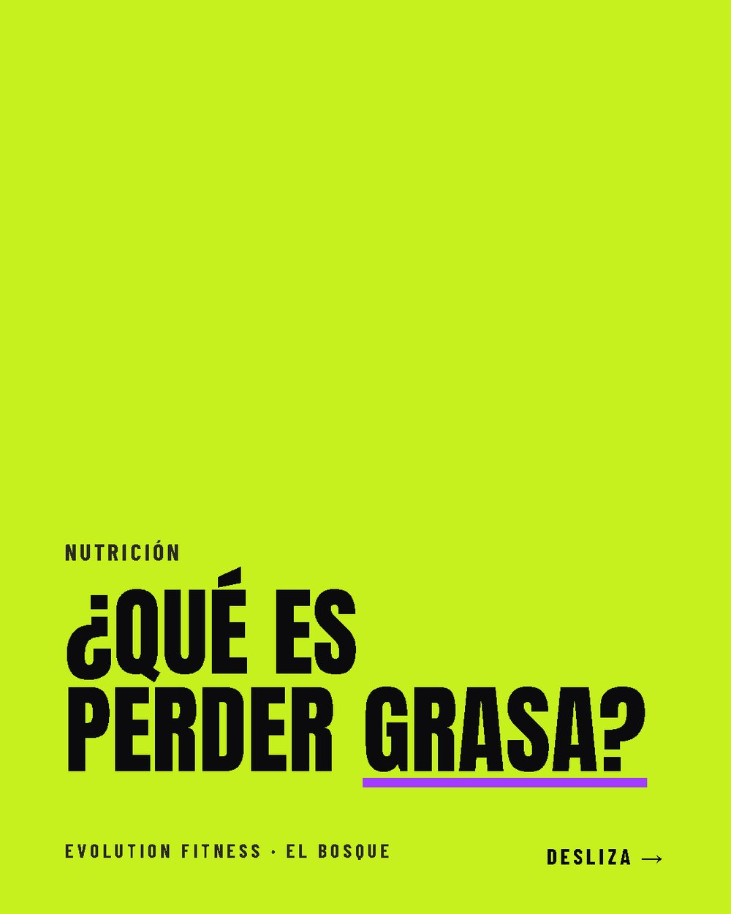
Antes: portada de un solo color
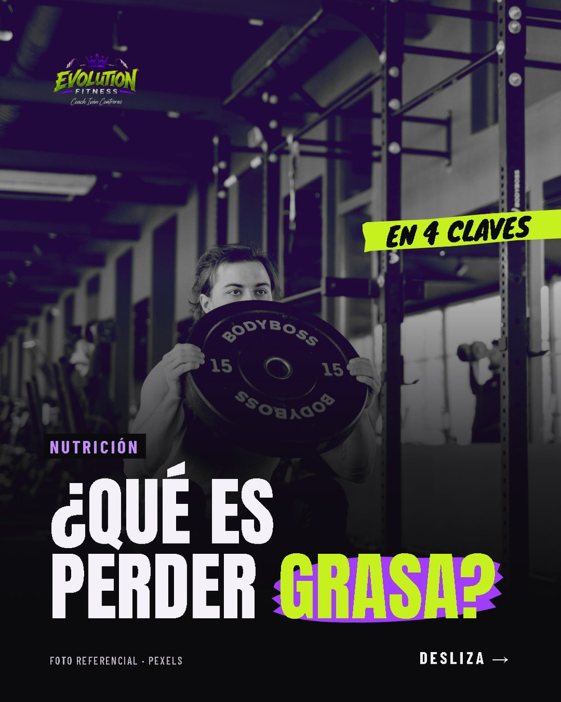
Ahora: con foto, el mismo título
La revisión de los 10 gimnasios (18-10-2026)
Abrimos cada perfil público de Instagram y miramos sus primeras 9 a 12 publicaciones. Toca el nombre para ver el perfil:
9 de 10 usan una sola letra gruesa (Equinox también usa una sola, pero fina). Los 10 muestran personas reales y poco texto por imagen. No pudimos medir sin iniciar sesión los «me gusta» ni cada cuánto publican.
¿Qué cambiarías de esta sección?
☐ Va así ☐ Cambiar ☐ Fuera
04 · El mes, pieza por piezaSemana 1 · 26 al 31 de octubre
Además, todos los días a las 17:00 sale la Frase del día (sección 06).
Lun 2609:00HistoriaComunidad
«Así reservas tu clase»
Estado: Lista · Cómo sale: Sale sola, a su hora. Después queda fija en la destacada «Reservas».
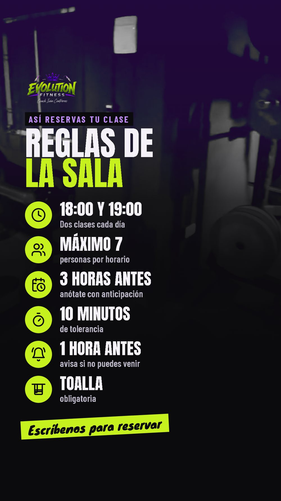
🎵 Con la música propuesta: Arabic Sunset - Spatial
Así se ve y se escucha con la canción (Colección de sonidos de Meta). Si prefieres otra, anótalo abajo.
Texto que acompaña la publicación
Es una historia: el texto va en la imagen. Queda guardada en el perfil, en la destacada «Reservas».
Es la información que mandaste al grupo de WhatsApp, tal cual.
¿Qué hacemos con esta pieza?
☐ Va así ☐ Cambiar ☐ Fuera
Lun 26durante el díaEncuestaComunidad
«¿Qué te cuesta más: empezar o seguir?»
Estado: Lista · Cómo sale: La sube Cristian a mano desde su celular ese día (Instagram no deja programar encuestas ni cajas de preguntas).
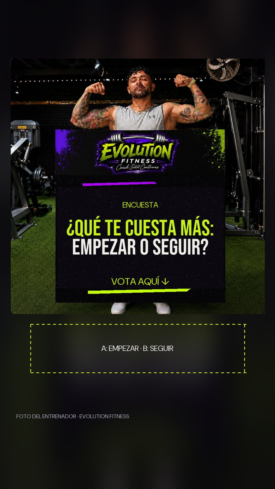
Texto que acompaña la publicación
Opciones de la encuesta: Empezar / Seguir. Es una historia: el texto va en la imagen.
¿Qué hacemos con esta pieza?
☐ Va así ☐ Cambiar ☐ Fuera
Mar 2717:00ReelAtraer
Zancada: 3 claves
Estado: Listo · Cómo sale: Sale solo, a su hora.
El reel completo, con la música propuesta: «Big Leagues» (Colección de sonidos de Meta). Dale play con sonido. Si prefieres otra canción o tu voz, anótalo abajo.
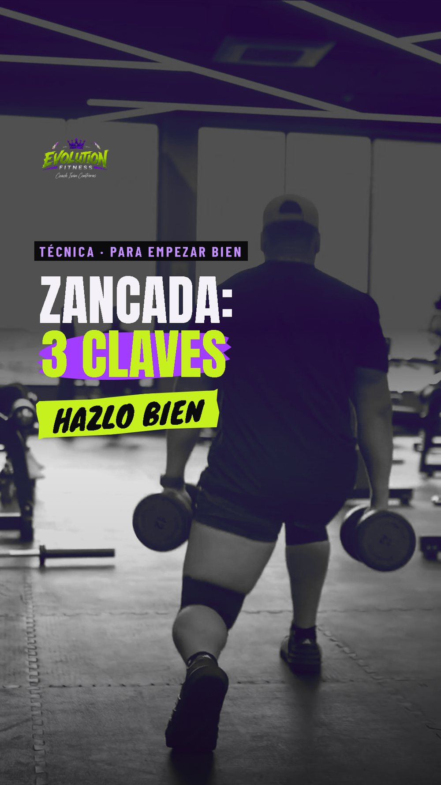
Portada
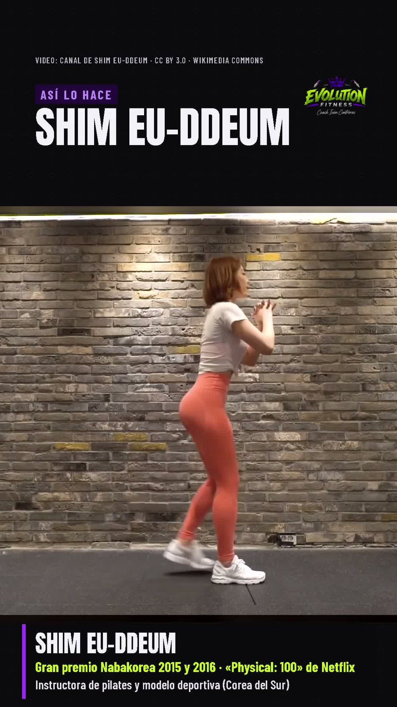
Momento 1 del reel
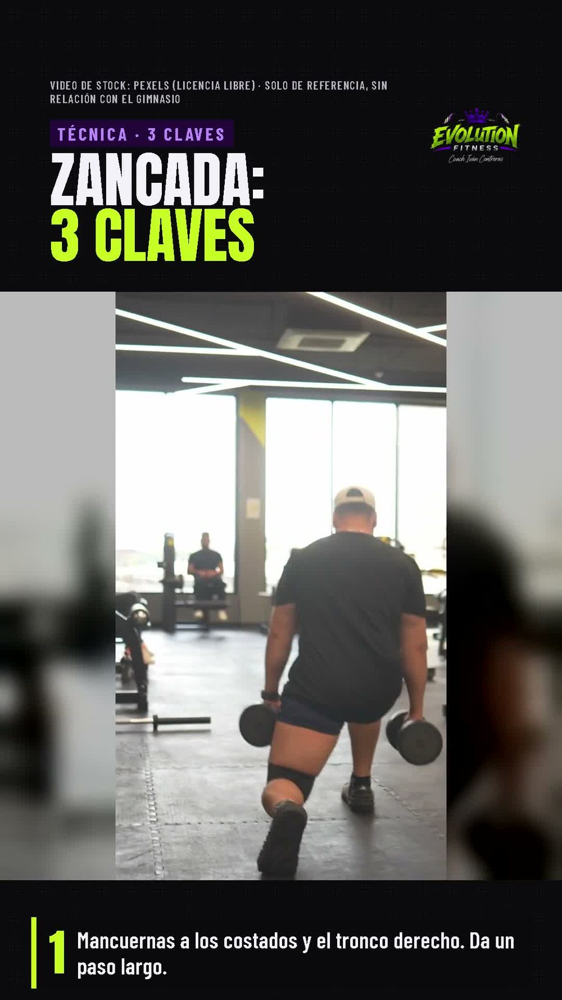
Momento 2 del reel
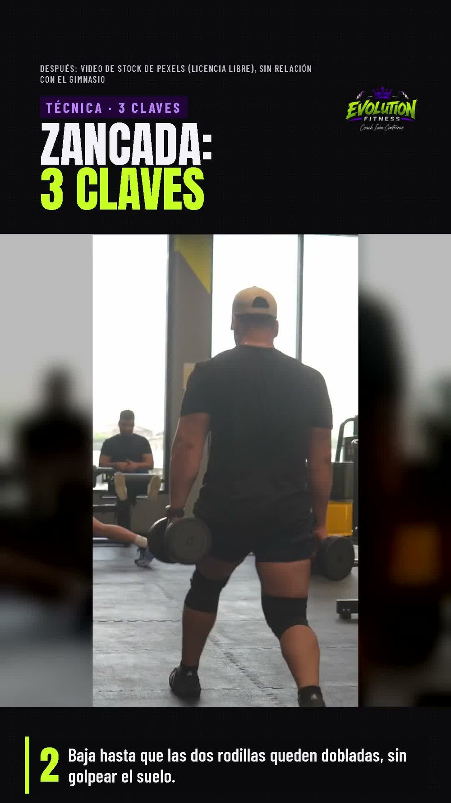
Momento 3 del reel
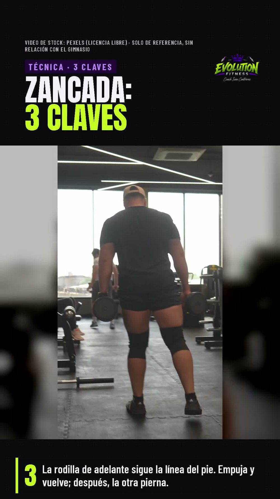
Momento 4 del reel
Texto que acompaña la publicación
Zancada: 3 claves para hacerla bien 👇
1. Mancuernas a los costados y el tronco derecho. Da un paso largo.
2. Baja hasta que las dos rodillas queden dobladas, sin golpear el suelo.
3. La rodilla de adelante sigue la línea del pie. Empuja y vuelve; después, la otra pierna.
¿La practicamos juntos? Si recién empiezas, parte con poco peso y baja solo hasta donde controles. Si tienes una enfermedad, un dolor, estás embarazada o hace años que no entrenas, avísanos y consulta a tu médico antes.
Escríbenos por DM y te contamos cómo empezar.
Al comienzo: Shim Eu-ddeum, instructora de pilates y gran premio Nabakorea 2015 y 2016 (Corea del Sur).
Video: canal de Shim Eu-ddeum (CC BY 3.0). Míralo completo: https://www.youtube.com/watch?v=eBtLrAXkATo
Después, video de stock de Pexels (licencia libre), sin relación con el gimnasio.
#ElBosque #EntrenamientoPersonalizado #EvolutionFitnessElBosque
📍 El Bosque
Qué se aprende al verlo: cómo dar el paso, hasta dónde bajar y cómo volver. Abre con 5 segundos de su video haciendo zancadas hacia atrás, sin su audio: Shim Eu-ddeum, instructora de pilates y modelo deportiva coreana, gran premio Nabakorea 2015 y 2016, participó en «Physical: 100» de Netflix (https://ko.wikipedia.org/wiki/%EC%8B%AC%EC%9C%BC%EB%9C%B8). Es de Wikimedia Commons, con una licencia que permite usarla con crédito; el crédito y el enlace van en el texto. Después vienen las 3 claves sobre un video de stock (Pexels, licencia libre). Las claves son las básicas del ejercicio: revísalas y cambia lo que enseñes distinto. Si nos mandas un video tuyo haciendo el mismo ejercicio, usamos el tuyo.
¿Qué hacemos con esta pieza?
☐ Va así ☐ Cambiar ☐ Fuera
Mié 2812:00CarruselEducar
«¿Tengo que comprar proteína?» · 8 láminas
Estado: Diseñado · Cómo sale: Sale solo, a su hora.
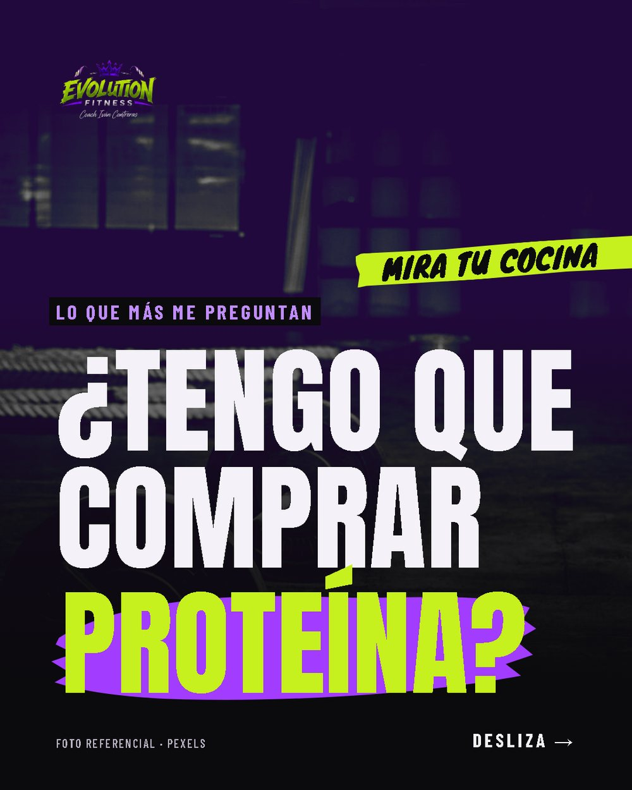
Lámina 1 de 8
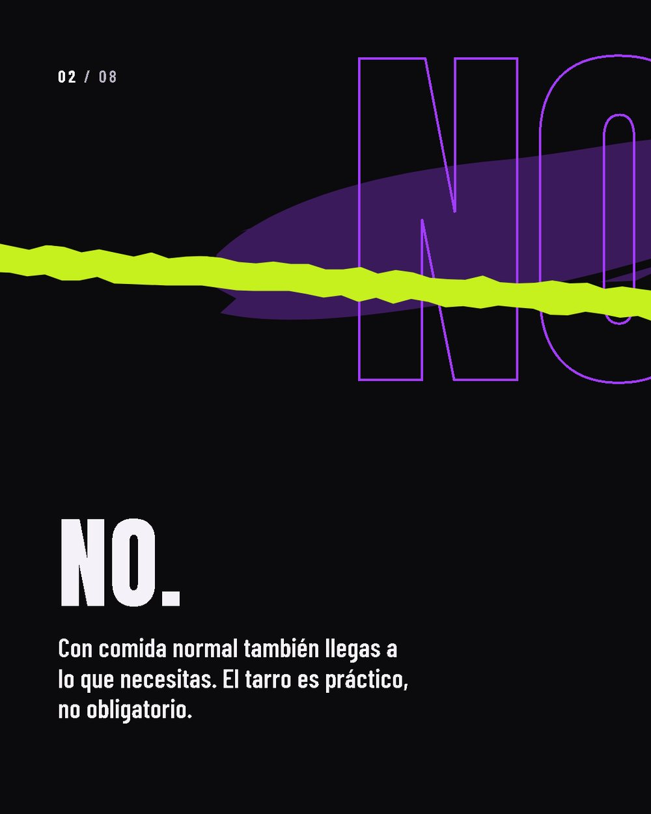
Lámina 2 de 8
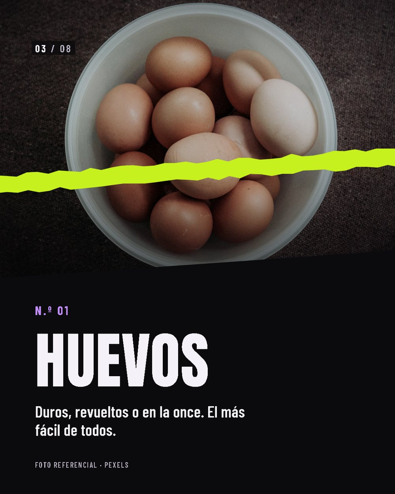
Lámina 3 de 8
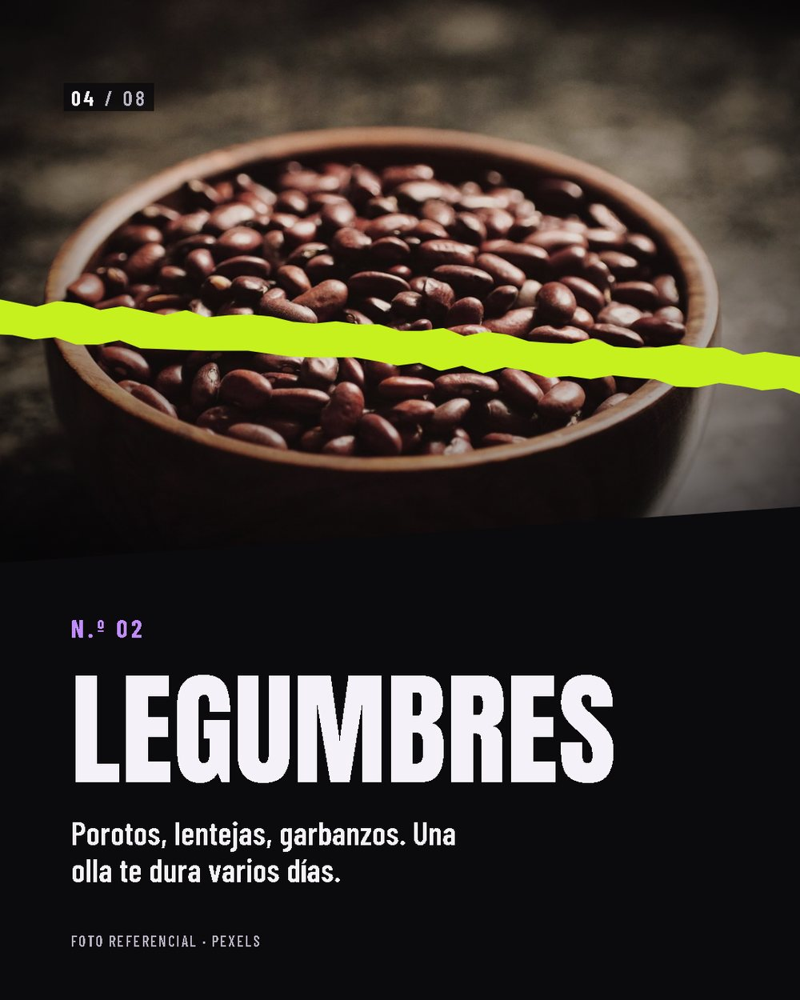
Lámina 4 de 8
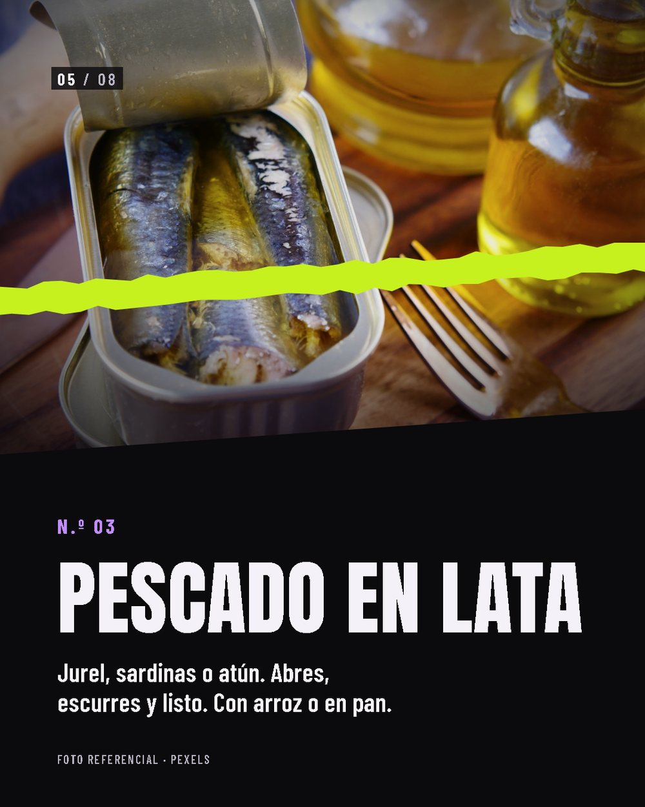
Lámina 5 de 8
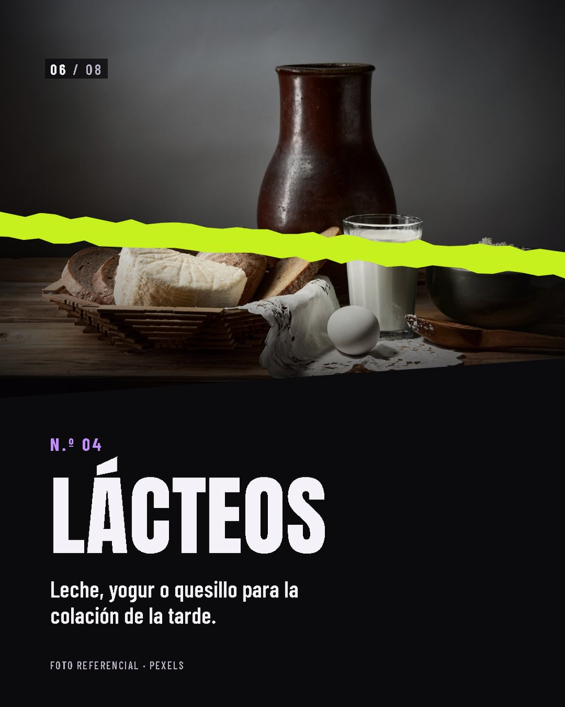
Lámina 6 de 8
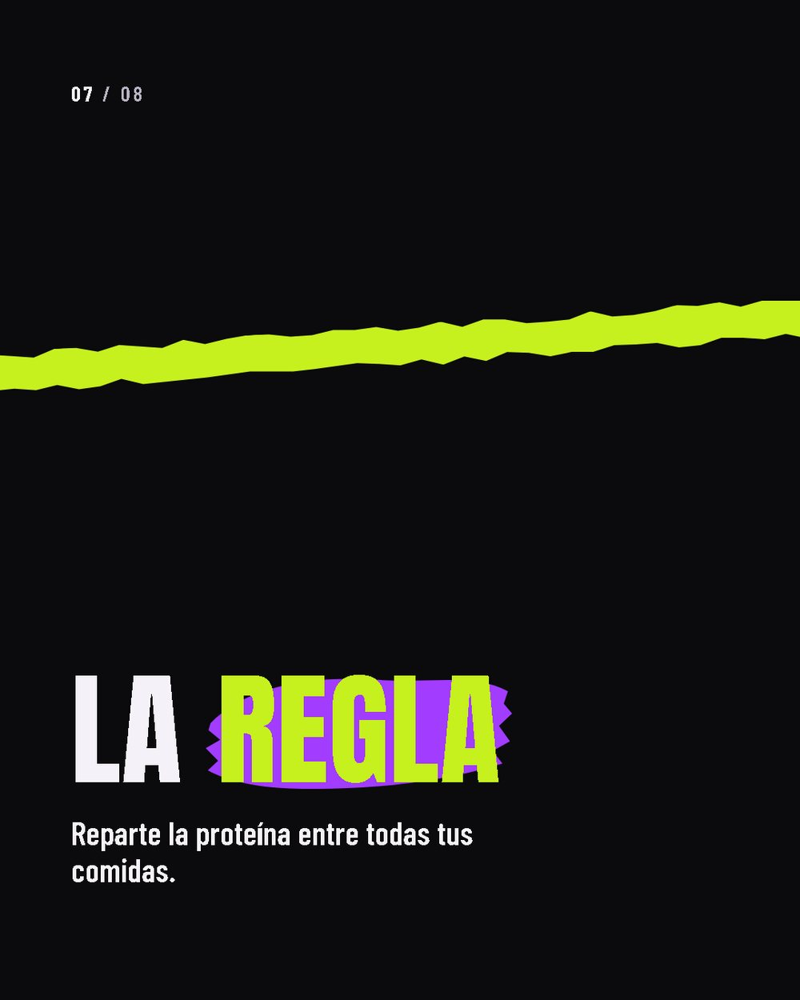
Lámina 7 de 8
Lámina 8 de 8
Desliza para ver las 8 láminas →
Texto que acompaña la publicación
¿Tengo que comprar proteína para entrenar? Es lo que más me preguntan en el gym.
Te respondo al tiro: no. El tarro es práctico, pero con comida normal también llegas. Desliza y mira lo que tienes en la cocina 👉
Si estás pensando en un suplemento, consúltalo con un nutricionista.
Si tienes algún problema de salud, revisa tu alimentación con un profesional.
¿Te animas a probar? Escríbenos por DM y te contamos cómo empezar.
Fuente: la Sociedad Internacional de Nutrición Deportiva (ISSN), en la postura oficial que publicó en 2017 en su revista científica (Journal of the International Society of Sports Nutrition). Fotos de referencia (Pexels).
#ElBosque #EntrenamientoPersonalizado #EvolutionFitnessElBosque
📍 El Bosque
Jäger R, Kerksick CM, Campbell BI y otros · Sociedad Internacional de Nutrición Deportiva (ISSN) · 20-06-2017 · Journal of the International Society of Sports Nutrition 14:20
Aunque las personas activas pueden cubrir la proteína del día con alimentos, el suplemento es una forma práctica de asegurarla.While it is possible for physically active individuals to obtain their daily protein requirements through the consumption of whole foods, supplementation is a practical way of ensuring intake of adequate protein quality and quantityRespalda: lámina 2. Las láminas 3 a 6 son ejemplos de alimentos comunes con proteína; no citan un estudio
Lo ideal es repartir esas porciones de proteína a lo largo del día, cada 3 a 4 horas.These protein doses should ideally be evenly distributed, every 3-4 h, across the day.Respalda: lámina 7 («La regla»), que lo simplifica: la ISSN habla de porciones de 20 a 40 g cada 3 a 4 horas
¿Qué hacemos con esta pieza?
☐ Va así ☐ Cambiar ☐ Fuera
Mié 2817:00HistoriaComunidad
«Nuevo post»: la portada del carrusel
Estado: Lista · Cómo sale: Sale sola, a su hora.
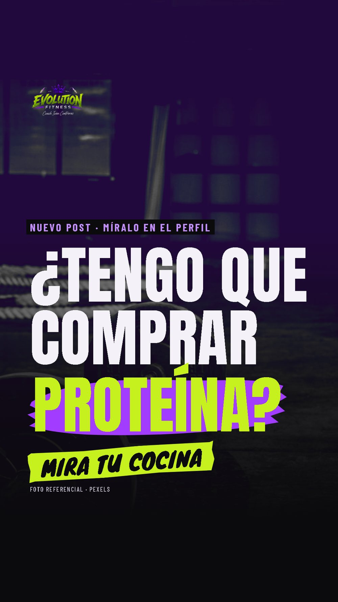
Texto que acompaña la publicación
Es una historia: el texto va en la imagen.
¿Qué hacemos con esta pieza?
☐ Va así ☐ Cambiar ☐ Fuera
Jue 2909:00ReelCaptar
«La sala en 15 segundos»
Estado: Necesitamos un video del gimnasio · Cómo sale: Sale solo, a su hora.
Todavía sin imagen: se hace con el video que nos mandes.
Texto que acompaña la publicación
¿Buscas gym en El Bosque? Así es EVOLUTION por dentro, en 15 segundos.
Grupos de máximo 7 personas, a las 18:00 y a las 19:00. Siempre partimos por la técnica.
¿Quieres probar? Escríbenos por DM y te contamos cómo empezar.
#ElBosque #EntrenamientoPersonalizado #EvolutionFitnessElBosque
📍 El Bosque
No da datos de salud ni de entrenamiento: no necesita fuente.
Para hacer esta pieza necesitamos un video de la sala: 15 a 30 segundos, con el celular en vertical, a la hora que la sala se vea mejor. Y cuéntanos qué te gustaría que saliera: máquinas, clases, el ambiente, algún detalle tuyo. Si no llega a tiempo, esta pieza pasa al mes siguiente.
¿Qué hacemos con esta pieza?
☐ Va así ☐ Cambiar ☐ Fuera
Jue 29durante el díaCaja de preguntasComunidad
«¿Qué ejercicio te da miedo hacer mal?»
Estado: Lista · Cómo sale: La sube Cristian a mano desde su celular ese día (Instagram no deja programar encuestas ni cajas de preguntas).
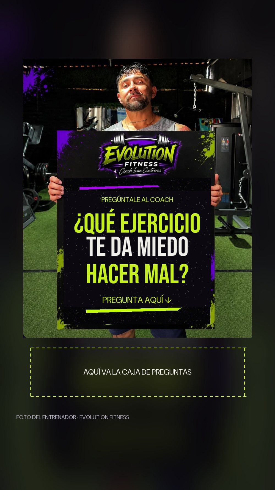
Texto que acompaña la publicación
Encabezado de la caja: «Pregúntale al profe (si es por una lesión, consulta a un profesional)». Es una historia: el texto va en la imagen.
Las preguntas que lleguen se responden dos semanas después (viernes 13).
¿Qué hacemos con esta pieza?
☐ Va así ☐ Cambiar ☐ Fuera
Sáb 3110:00HistoriaEducar
Video del finde: ¿cuánta proteína necesitas? (Stuart Phillips)
Estado: Lista · Cómo sale: La deja programada Cristian en Meta Business Suite, con el enlace (probado el 18-10 en la cuenta de prueba).
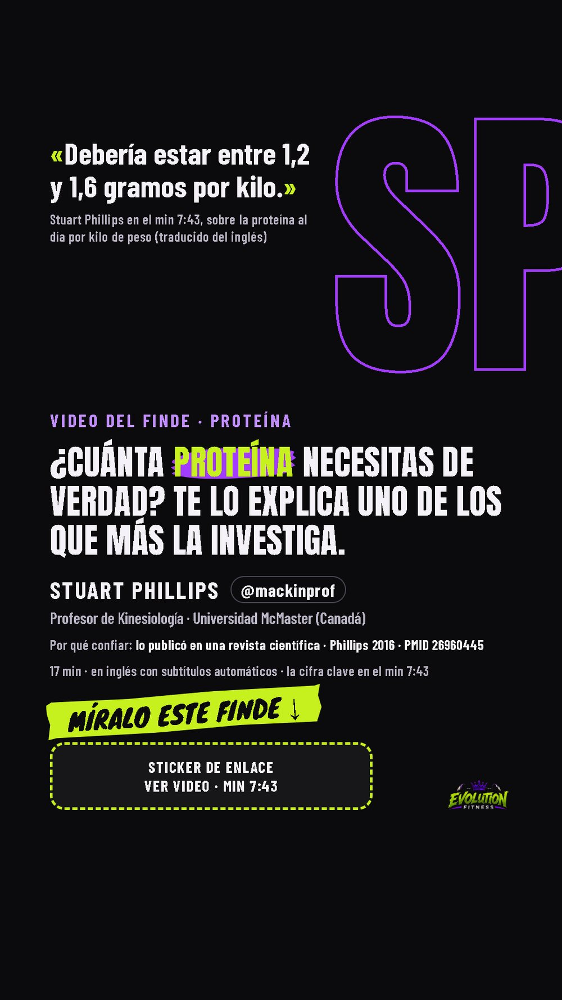
Texto que acompaña la publicación
Es una historia: el texto va en la imagen. El enlace lleva al minuto 7:43 de la entrevista.
Lleva su frase del minuto 7:43, traducida, y el enlace a la entrevista. Va con el carrusel de la proteína de esa semana. Más detalle en la sección «Videos de expertos».
¿Qué hacemos con esta pieza?
☐ Va así ☐ Cambiar ☐ Fuera
04 · El mes, pieza por piezaSemana 2 · 2 al 7 de noviembre
Además, todos los días a las 17:00 sale la Frase del día (sección 06).
Lun 209:00HistoriaCaptar
«Tu evaluación»
Estado: Lista · Cómo sale: Sale sola, a su hora.
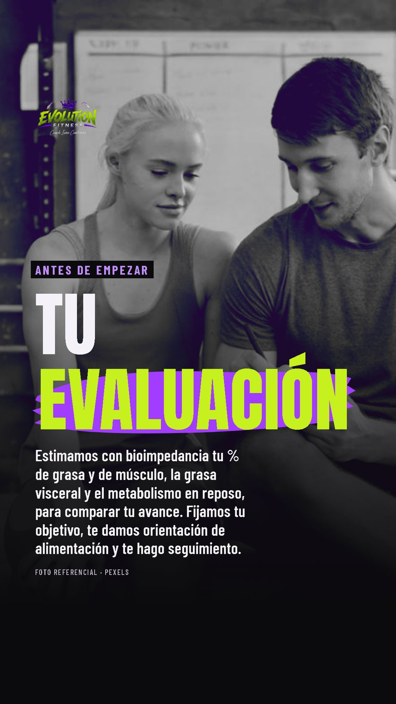
Texto que acompaña la publicación
Es una historia: el texto va en la imagen.
Cuenta tu evaluación tal como la vimos en tu pauta. No muestra datos de ningún alumno. La foto es de referencia: si nos mandas una tuya con la balanza, va esa.
¿Qué hacemos con esta pieza?
☐ Va así ☐ Cambiar ☐ Fuera
Lun 2durante el díaEncuestaComunidad
«¿Qué miras más: la balanza o cómo te queda la ropa?»
Estado: Lista · Cómo sale: La sube Cristian a mano desde su celular ese día (Instagram no deja programar encuestas ni cajas de preguntas).
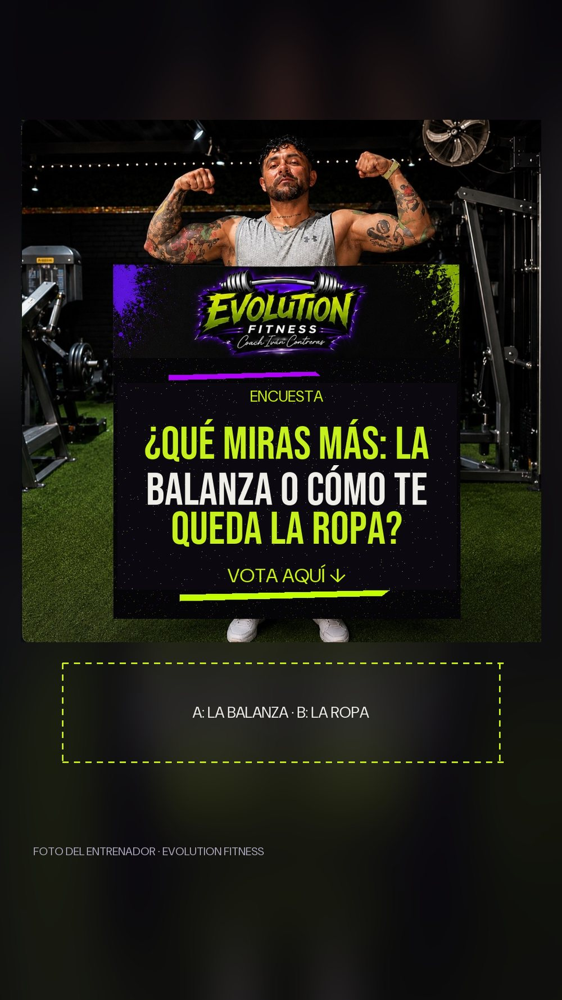
Texto que acompaña la publicación
Opciones: La balanza / La ropa. Es una historia: el texto va en la imagen.
¿Qué hacemos con esta pieza?
☐ Va así ☐ Cambiar ☐ Fuera
Mar 317:00ReelAtraer
Técnica: peso muerto, 3 claves
Estado: Listo · Cómo sale: Sale solo, a su hora.
El reel completo, con la música propuesta: «Break It (Instrumental)» (Colección de sonidos de Meta). Dale play con sonido. Si prefieres otra canción o tu voz, anótalo abajo.
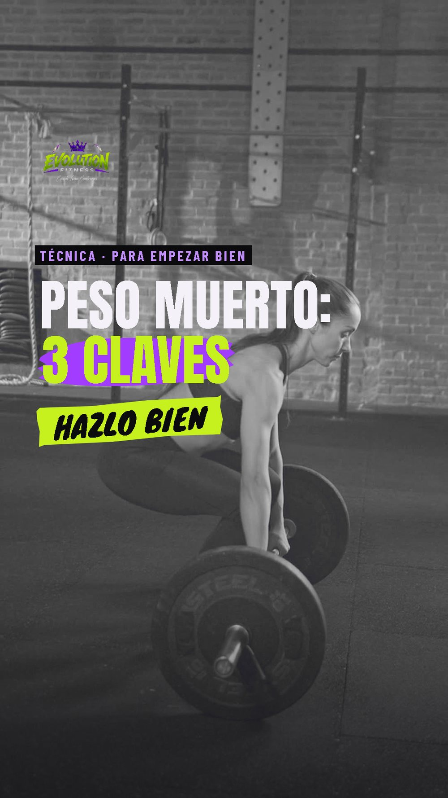
Portada
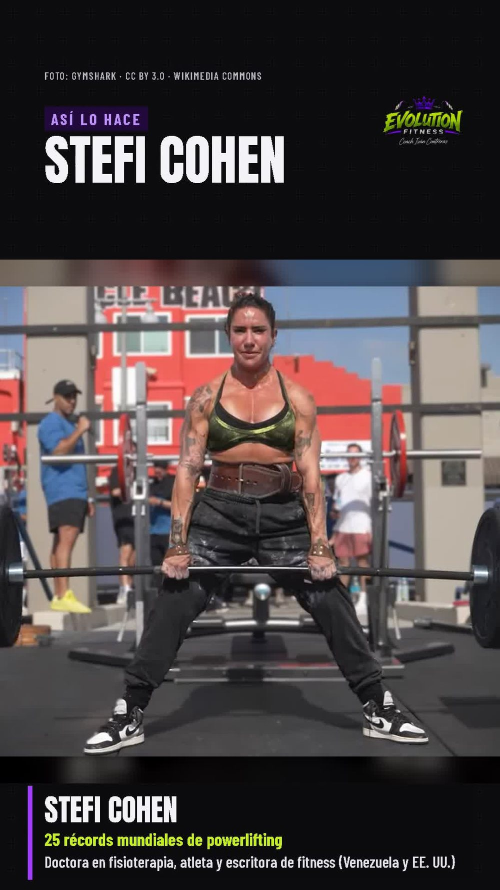
Momento 1 del reel
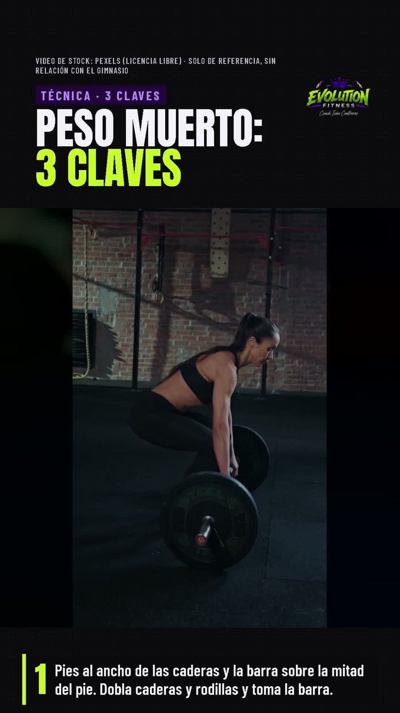
Momento 2 del reel
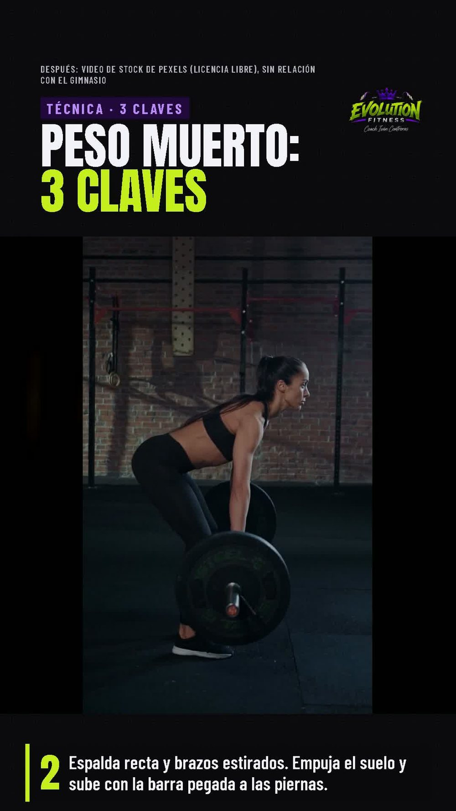
Momento 3 del reel
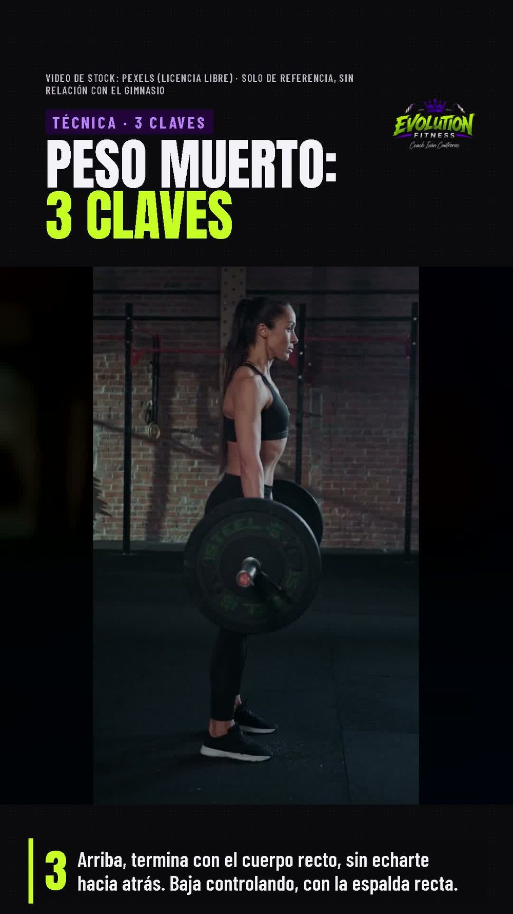
Momento 4 del reel
Texto que acompaña la publicación
Peso muerto: 3 claves para hacerlo bien 👇
1. Pies al ancho de las caderas y la barra sobre la mitad del pie. Dobla caderas y rodillas y toma la barra.
2. Espalda recta y brazos estirados. Empuja el suelo y sube con la barra pegada a las piernas.
3. Arriba, termina con el cuerpo recto, sin echarte hacia atrás. Baja controlando, con la espalda recta.
¿Lo quieres aprender en la sala? Si recién empiezas, parte con poco peso y baja solo hasta donde controles. Si tienes una enfermedad, un dolor, estás embarazada o hace años que no entrenas, avísanos y consulta a tu médico antes.
Escríbenos por DM y te contamos cómo empezar.
Al comienzo: Stefi Cohen, 25 récords mundiales de powerlifting y doctora en fisioterapia.
Foto: cuadro de un video de Gymshark (CC BY 3.0). Míralo completo: https://www.youtube.com/watch?v=o8uTwC727kY
Después, video de stock de Pexels (licencia libre), sin relación con el gimnasio.
#ElBosque #EntrenamientoPersonalizado #EvolutionFitnessElBosque
📍 El Bosque
Qué se aprende al verlo: cómo tomar la barra, cómo poner la espalda y cómo subir sin perder la postura. Abre con una foto suya en pleno peso muerto (140 kg): Stefi Cohen, powerlifter venezolana y estadounidense con 25 récords mundiales y doctora en fisioterapia; hoy es atleta, boxeadora y escribe sobre entrenamiento (https://en.wikipedia.org/wiki/Stefi_Cohen). Es de Wikimedia Commons, con una licencia que permite usarla con crédito; el crédito y el enlace van en el texto. Después vienen las 3 claves sobre un video de stock (Pexels, licencia libre). Las claves son las básicas del ejercicio: revísalas y cambia lo que enseñes distinto. Si nos mandas un video tuyo haciendo el mismo ejercicio, usamos el tuyo.
¿Qué hacemos con esta pieza?
☐ Va así ☐ Cambiar ☐ Fuera
Mié 412:00CarruselEducar
«¿Qué es perder grasa?» · 6 láminas
Estado: Diseñado (portada y láminas nuevas) · Cómo sale: Sale solo, a su hora.
Lámina 1 de 6
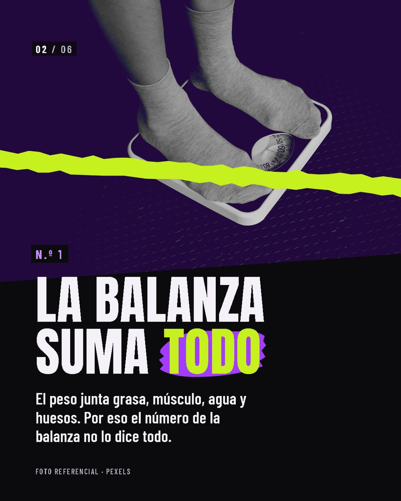
Lámina 2 de 6
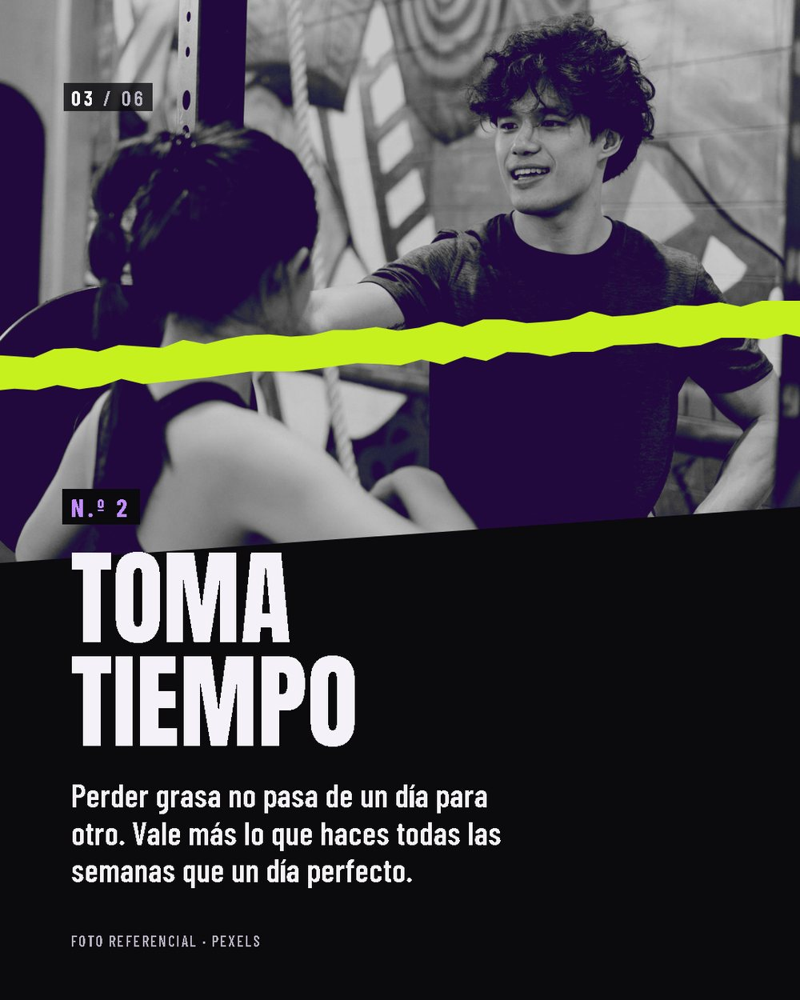
Lámina 3 de 6
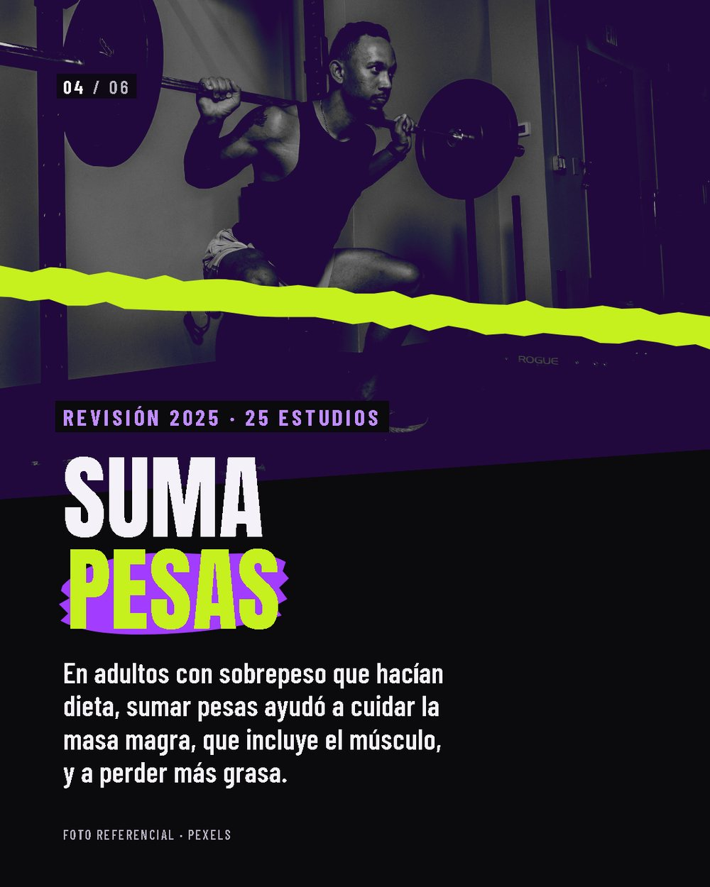
Lámina 4 de 6
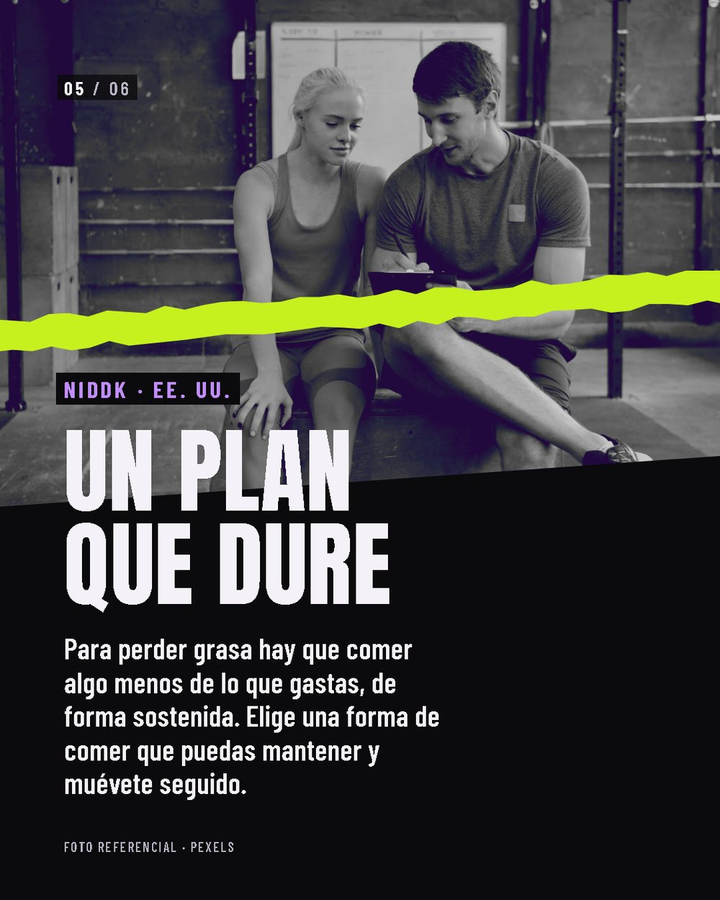
Lámina 5 de 6
Lámina 6 de 6
Desliza para ver las 6 láminas →
🎵 Con la música propuesta: Rise (Instrumental)
Así se ve y se escucha con la canción (Colección de sonidos de Meta). Si prefieres otra, anótalo abajo.
Texto que acompaña la publicación
¿Qué es perder grasa? Harta gente me lo pregunta en el gym.
La balanza te puede engañar: el peso junta grasa, músculo, agua y huesos. Para perder grasa hay que comer algo menos de lo que gastas, con un plan que puedas mantener y muévete seguido. Y en adultos con sobrepeso que hacen dieta, sumar pesas ayuda a cuidar la masa magra, que incluye el músculo.
Si tienes algún problema de salud, consulta con un profesional.
¿Quieres probar? Escríbenos por DM y te contamos cómo empezar.
Fuentes: el NIDDK, instituto de los Institutos Nacionales de Salud de EE. UU. (el organismo público de investigación médica de ese país), 2023 · una revisión de 25 estudios de la Universidad de Glasgow (Binmahfoz y otros), publicada en 2025 en la revista científica BMJ Open Sport & Exercise Medicine.
Fotos de referencia (Pexels).
#ElBosque #EntrenamientoPersonalizado #EvolutionFitnessElBosque
📍 El Bosque
Binmahfoz A, Dighriri A, Gray C, Gray SR · Universidad de Glasgow · BMJ Open Sport & Exercise Medicine · 02-09-2025 · 25 estudios con adultos de 18 a 65 años con sobrepeso u obesidad
El ejercicio con pesas protegió contra la pérdida de masa magra (certeza moderada) y aumentó la pérdida de grasa (certeza alta).resistance exercise protected against the loss of fat-free mass (…, moderate certainty) and increased loss of fat mass (…, high certainty)Respalda: lámina 4 (masa magra = músculo y otros tejidos sin grasa)
Ojo, el mismo estudio: sumar pesas no cambió cuántos kilos se bajaron. Cambió de qué estaban hechos esos kilos.resistance exercise during diet-induced weight loss had no effect on body massRespalda: por eso la lámina habla de grasa y músculo, no de kilos
NIDDK · Institutos Nacionales de Salud de EE. UU. (organismo público) · Revisada en mayo de 2023
Los adultos que quieren bajar de peso y mantenerlo deberían reducir las calorías que consumen en comidas y bebidas.adults who want to lose weight and keep it off should reduce the number of calories they take in from foods and beveragesRespalda: lámina 5 («comer algo menos de lo que gastas»); verificada el 19-10 en la página del NIDDK
La clave para bajar de peso es elegir un plan de alimentación sano que puedas mantener en el tiempo.The key to losing weight is choosing a healthy eating plan that you can maintain over time.Respalda: lámina 5
La actividad física puede ayudarte a bajar el exceso de peso y a mantener un peso sano.Physical activity can help you lose excess weight and stay at a healthy weight.Respalda: lámina 5
¿Qué hacemos con esta pieza?
☐ Va así ☐ Cambiar ☐ Fuera
Mié 417:00HistoriaComunidad
«Nuevo post»
Estado: Lista · Cómo sale: Sale sola, a su hora.
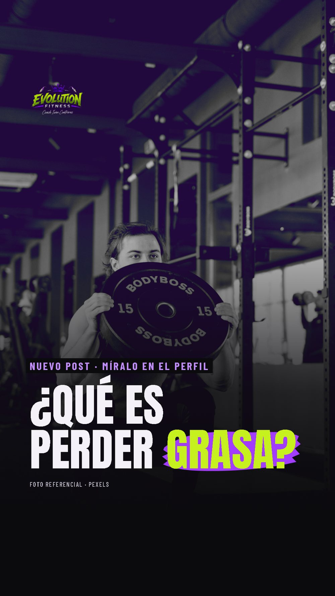
Texto que acompaña la publicación
Es una historia: el texto va en la imagen.
¿Qué hacemos con esta pieza?
☐ Va así ☐ Cambiar ☐ Fuera
Jue 509:00ReelAtraer
«Más que una lista de ejercicios»: cómo acompañas a un alumno
Estado: Portada lista · falta el video · Cómo sale: Sale solo, a su hora.
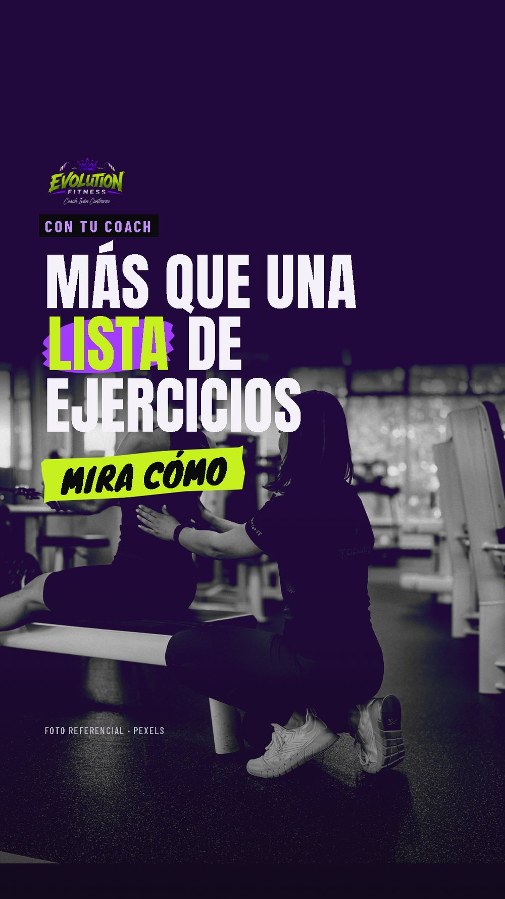
🎵 Con la música propuesta: Vibes Allright
Así se ve y se escucha con la canción (Colección de sonidos de Meta). Si prefieres otra, anótalo abajo.
Texto que acompaña la publicación
Acá no te paso una lista de ejercicios y chao. En EVOLUTION te pregunto qué quieres lograr ese día, miro cómo te mueves y voy ajustando cuando hace falta.
Grupos de máximo 7 personas, a las 18:00 y a las 19:00.
¿Te animas? Escríbenos por DM y te contamos cómo empezar.
#ElBosque #EntrenamientoPersonalizado #EvolutionFitnessElBosque
📍 El Bosque
No da datos de salud ni de entrenamiento: no necesita fuente.
Necesita un video tuyo en una clase: tú corrigiendo o explicando, 20 a 30 segundos. La foto de la portada es de referencia y se cambia por un cuadro de tu video.
¿Qué hacemos con esta pieza?
☐ Va así ☐ Cambiar ☐ Fuera
Jue 5durante el díaCaja de preguntasComunidad
«¿Qué duda tienes sobre comer antes de entrenar?»
Estado: Lista · Cómo sale: La sube Cristian a mano desde su celular ese día (Instagram no deja programar encuestas ni cajas de preguntas).
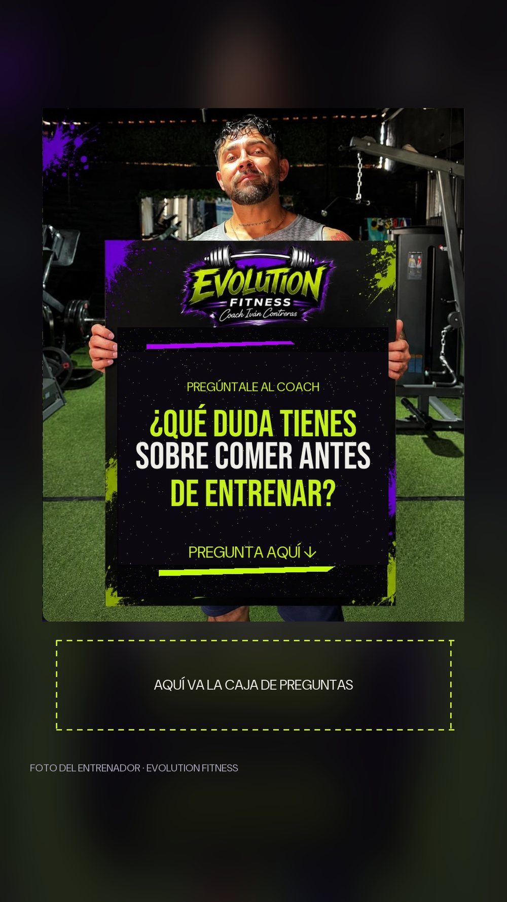
Texto que acompaña la publicación
Encabezado de la caja: «Pregúntale al profe (si es por una lesión, consulta a un profesional)». Es una historia: el texto va en la imagen.
¿Qué hacemos con esta pieza?
☐ Va así ☐ Cambiar ☐ Fuera
Sáb 710:00HistoriaEducar
Video del finde: ¿crece más el músculo estirado? (podcast con Milo Wolf, PhD)
Estado: Lista · Cómo sale: La deja programada Cristian en Meta Business Suite, con el enlace (probado el 18-10 en la cuenta de prueba).
La historia completa, tal como sale, con su voz y subtítulos.
Momento 1 del videoMomento 2 del videoMomento 3 del video
Texto que acompaña la publicación
Es una historia: lleva su voz con subtítulos en español y un enlace a la entrevista completa.
Entrevista a Milo Wolf, PhD · canal THE BFR PROS · 11-03-2024 · licencia CC BY 3.0 · copia en Wikimedia Commons
Hay bastante evidencia de que entrenar con el músculo estirado suele dar más crecimiento que con el músculo acortado.we have quite a compelling body of evidence at this point that lengthened training is generally better than shortened training when it comes to hypertrophyRespalda: subtítulo 1 (minuto 7:52)
De forma bastante constante en 20 a 25 estudios.Very consistently across these 20 to 25 studies nowRespalda: subtítulo 2 (minuto 8:15)
Comparado con el recorrido completo, la diferencia es de 5 a 15 %.if you're comparing full range of motion to more lengthened training […] we're talking about like five to maybe up to 15%Respalda: subtítulo 3 (minuto 6:34)
Wolf M y otros · PeerJ · 2025 · 30 personas que ya entrenaban
El grosor del músculo y la fuerza mejoraron parecido con parciales estiradas y con recorrido completo.Both muscle thickness and unilateral lat pulldown 10-repetition-maximum improvements were similar between the two conditionsRespalda: por eso la historia dice que la diferencia «no es tanta»
Quién es: Milo Wolf, doctor en ciencias del deporte (Solent University, Reino Unido), con una tesis sobre el recorrido de los ejercicios y estudios publicados con Brad Schoenfeld. Qué se aprende: que hacer la parte del movimiento con el músculo estirado ayuda algo a crecer, pero la diferencia es chica. Es una técnica para quien ya entrena; para empezar, el recorrido completo. Usamos 23 segundos de la entrevista (licencia CC BY, permite reutilizarla con crédito). Él vende asesorías en línea: lo decimos.
¿Qué hacemos con esta pieza?
☐ Va así ☐ Cambiar ☐ Fuera
04 · El mes, pieza por piezaSemana 3 · 9 al 14 de noviembre
Además, todos los días a las 17:00 sale la Frase del día (sección 06).
Lun 9durante el díaEncuestaComunidad
«¿Cuántos días a la semana entrenas?»
Estado: Lista · Cómo sale: La sube Cristian a mano desde su celular ese día (Instagram no deja programar encuestas ni cajas de preguntas).
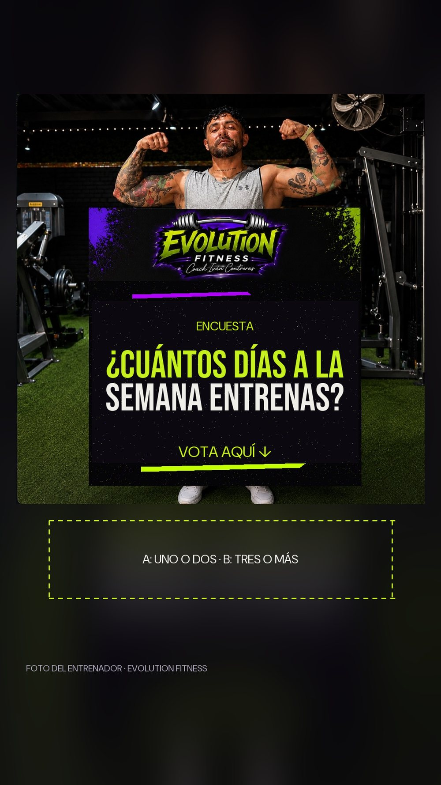
Texto que acompaña la publicación
Opciones: Uno o dos / Tres o más. Es una historia: el texto va en la imagen.
¿Qué hacemos con esta pieza?
☐ Va así ☐ Cambiar ☐ Fuera
Mar 1017:00ReelAtraer
«¿Al fallo en todas las series?»
Estado: Portada lista · falta el video · Cómo sale: Sale solo, a su hora.
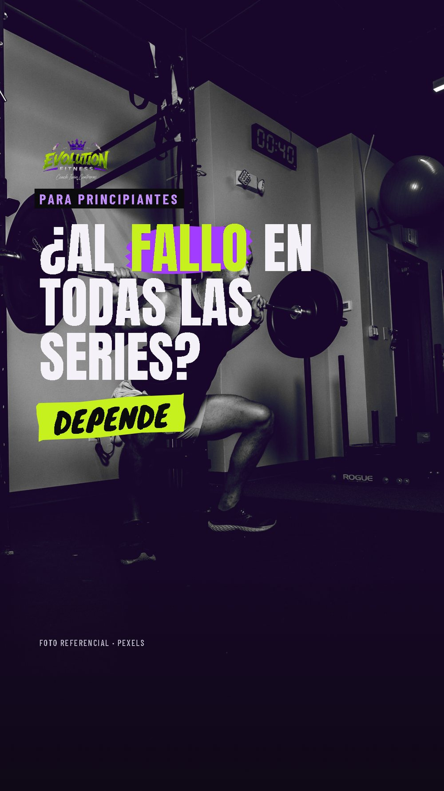
🎵 Con la música propuesta: Dopey
Así se ve y se escucha con la canción (Colección de sonidos de Meta). Si prefieres otra, anótalo abajo.
Texto que acompaña la publicación
¿Hay que llegar al fallo en todas las series? No es obligatorio, y en el video te explico por qué.
Para mí, el fallo es cuando ya no te sale otra repetición con buena técnica. La nueva guía del Colegio Americano de Medicina del Deporte (ACSM) no encontró que entrenar hasta el fallo cambie los resultados de manera constante. Entrena con ganas y cuida la técnica.
¿Quieres que te revise la técnica? Escríbenos por DM y te contamos cómo empezar.
Fuente: la guía 2026 del Colegio Americano de Medicina del Deporte (ACSM), la mayor organización de medicina del deporte y ciencias del ejercicio del mundo.
#ElBosque #EntrenamientoPersonalizado #EvolutionFitnessElBosque
📍 El Bosque
Currier BS y otros · Colegio Americano de Medicina del Deporte (ACSM) · Publicado el 05-03-2026 · adultos sanos
Entrenar hasta el fallo (y otros detalles, como el tipo de máquina) no cambió los resultados de manera constante.Training to momentary muscle fatigue, equipment type, exercise complexity, set structure, time under tension, blood flow restriction, and periodization did not consistently impact training outcomes.Respalda: todo el reel
Necesita un video tuyo de unos 20 segundos explicándolo con tus palabras. Si esa semana no hay video, pasa al mes siguiente.
¿Qué hacemos con esta pieza?
☐ Va así ☐ Cambiar ☐ Fuera
Mié 1112:00CarruselEducar
«¿Cuántas veces entrenar cada músculo?» · 6 láminas
Estado: Diseñado (portada y láminas nuevas) · Cómo sale: Sale solo, a su hora.
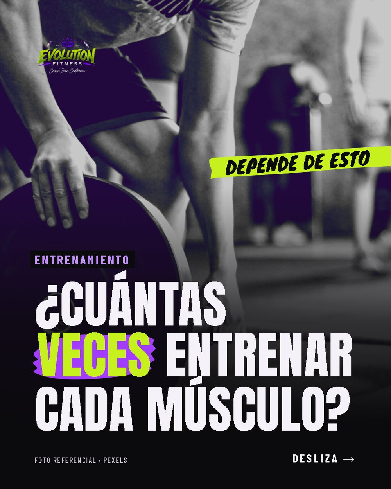
Lámina 1 de 6
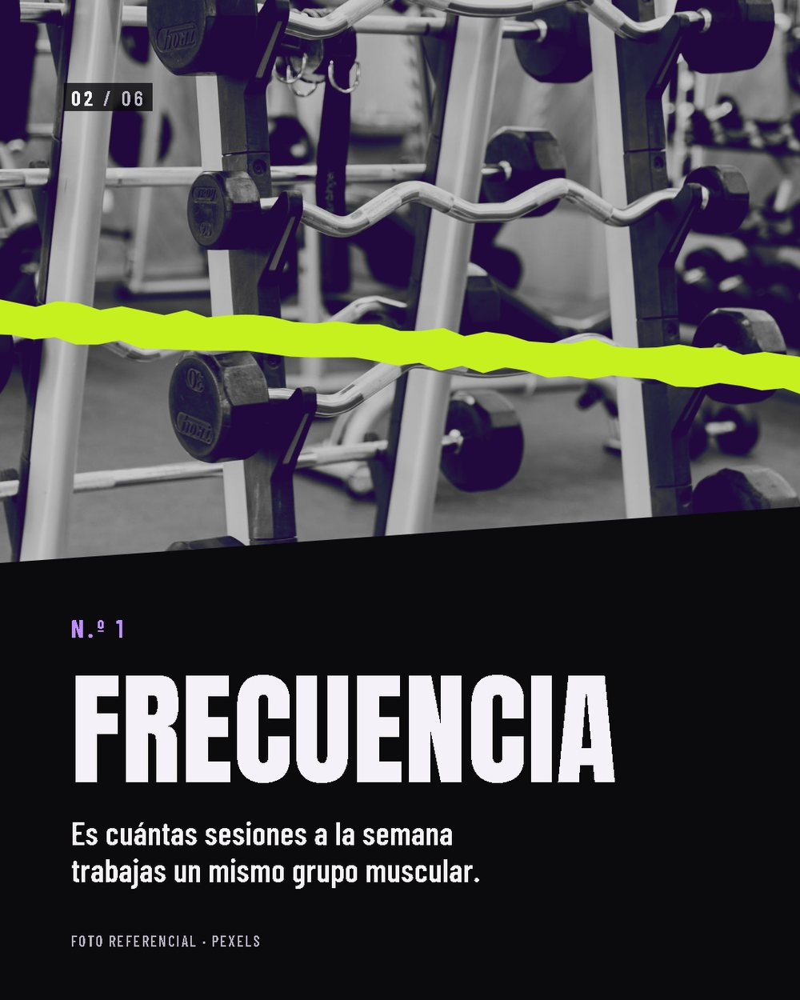
Lámina 2 de 6
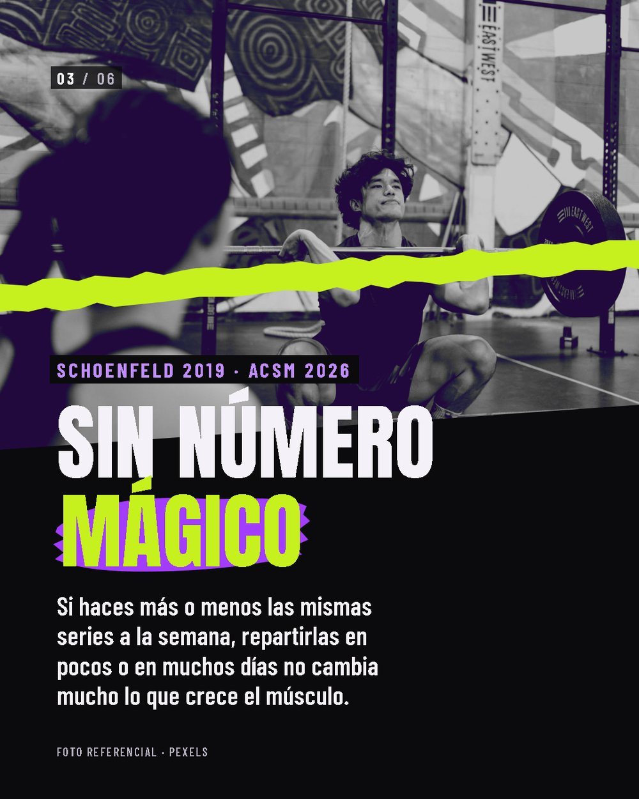
Lámina 3 de 6
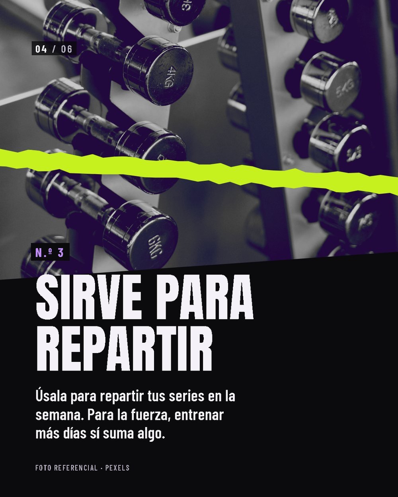
Lámina 4 de 6
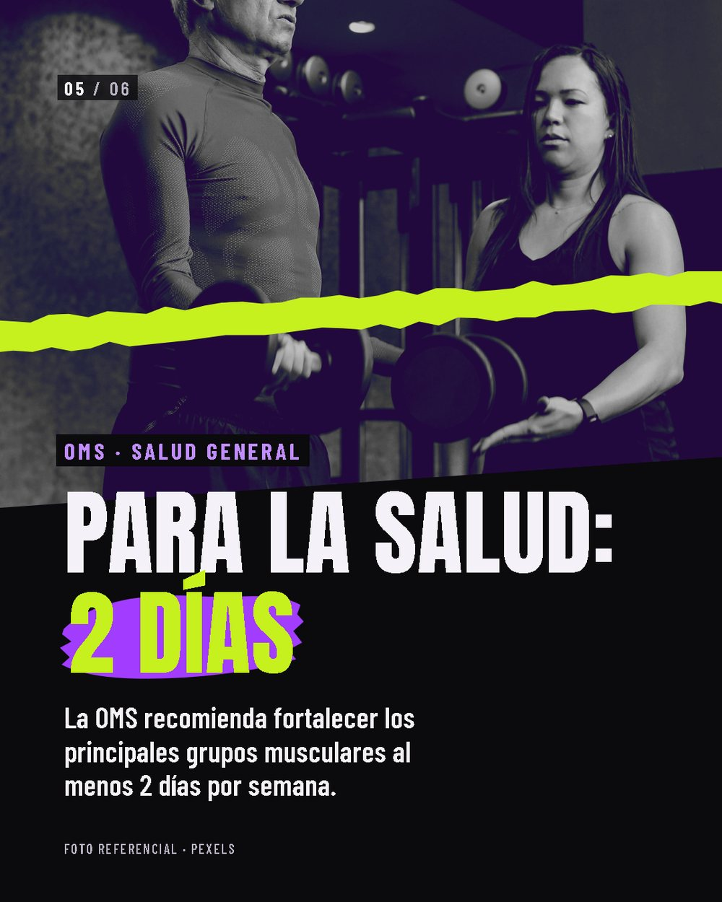
Lámina 5 de 6
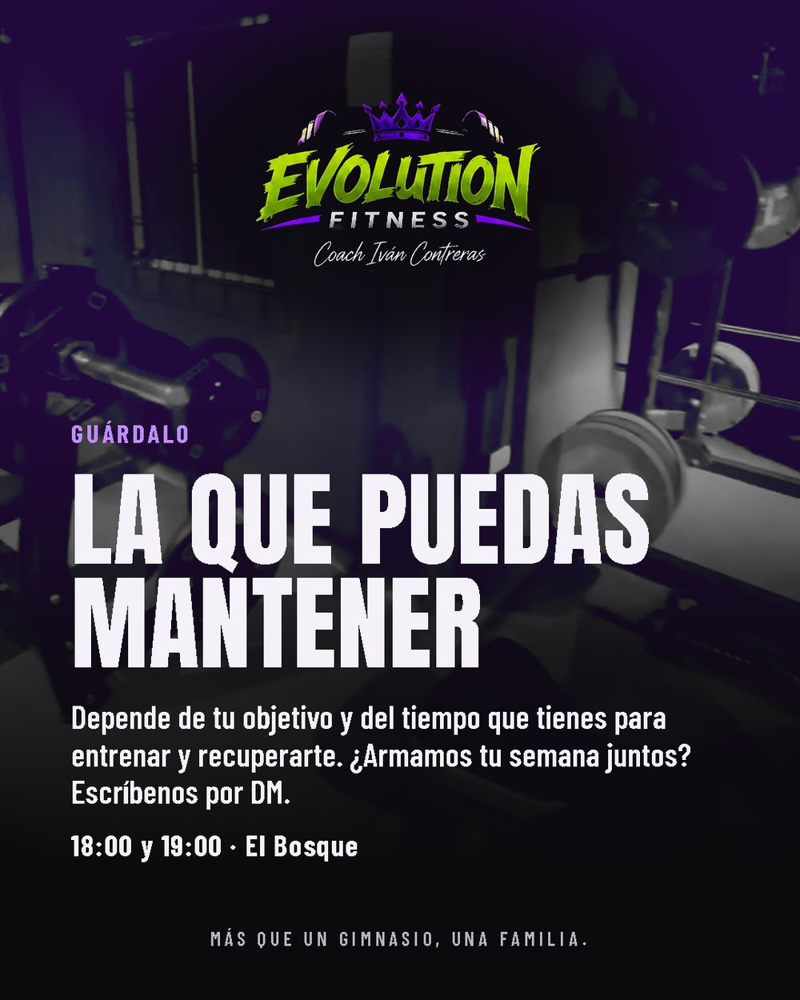
Lámina 6 de 6
Desliza para ver las 6 láminas →
🎵 Con la música propuesta: Flex (Instrumental)
Así se ve y se escucha con la canción (Colección de sonidos de Meta). Si prefieres otra, anótalo abajo.
Texto que acompaña la publicación
¿Cuántas veces a la semana hay que entrenar cada músculo?
No hay número mágico. Si haces más o menos las mismas series a la semana, repartirlas en pocos o en muchos días cambia poco para el músculo (para la fuerza, más días sí suman algo). Así que elige los días que te acomoden. Y para la salud, la OMS recomienda ejercicios de fuerza al menos 2 días por semana.
¿Lo armamos juntos? Escríbenos por DM y te contamos cómo empezar.
Fuentes: una revisión de 25 estudios de Schoenfeld y otros (Journal of Sports Sciences, 2019) · la guía 2026 del Colegio Americano de Medicina del Deporte (ACSM), la mayor organización de medicina del deporte y ciencias del ejercicio del mundo · una revisión de 67 estudios de Pelland y otros (Sports Medicine, 2026) · la Organización Mundial de la Salud (OMS), 2020.
Fotos de referencia (Pexels).
#ElBosque #EntrenamientoPersonalizado #EvolutionFitnessElBosque
📍 El Bosque
Schoenfeld BJ, Grgic J, Krieger J · Journal of Sports Sciences 37(11):1286-1295 · 2019 · 25 estudios
Hay evidencia fuerte de que, con el mismo número de series, entrenar más o menos días no cambia de forma importante el tamaño del músculo.there is strong evidence that resistance training frequency does not significantly or meaningfully impact muscle hypertrophy when volume is equated.Respalda: lámina 3 («si haces más o menos las mismas series a la semana»)
Currier BS y otros · Colegio Americano de Medicina del Deporte (ACSM) · Publicado el 05-03-2026
Con el mismo total de series, entrenar 1 día o más de 5 días a la semana no cambió el crecimiento del músculo.RT did not influence hypertrophy performed with low (1 d/wk) versus high (>5 d/wk) frequency when total volume was equatedRespalda: lámina 3
Pelland JC, Remmert JF, Robinson ZP, Hinson SR, Zourdos MC · Florida Atlantic University · Sports Medicine · Febrero de 2026 (en línea desde el 04-12-2025) · 67 estudios, 2.058 personas
Para el tamaño del músculo, entrenar más días a la semana puede no tener casi ningún efecto.The posterior probability of the marginal slope exceeding zero for frequency's effect on hypertrophy was less than 100%, indicating compatibility with negligible effects.Respalda: lámina 3
Para la fuerza sí: entrenar más días suma, aunque cada día extra suma menos.the posterior probability for strength was 100%, suggesting strength gains increase with increasing frequency, albeit with diminishing returns.Respalda: lámina 4 («para la fuerza, entrenar más días sí suma algo»)
Organización Mundial de la Salud (OMS) · Bull FC y otros · British Journal of Sports Medicine 54:1451-1462 · Diciembre de 2020
Los adultos también deberían hacer ejercicios de fuerza, de intensidad moderada o mayor, con todos los grandes grupos musculares, 2 o más días por semana.Adults should also do muscle-strengthening activities at moderate or greater intensity that involve all major muscle groups on 2 or more days a week, as these provide additional health benefitsRespalda: lámina 5
¿Qué hacemos con esta pieza?
☐ Va así ☐ Cambiar ☐ Fuera
Mié 1117:00HistoriaComunidad
«Nuevo post»
Estado: Lista · Cómo sale: Sale sola, a su hora.
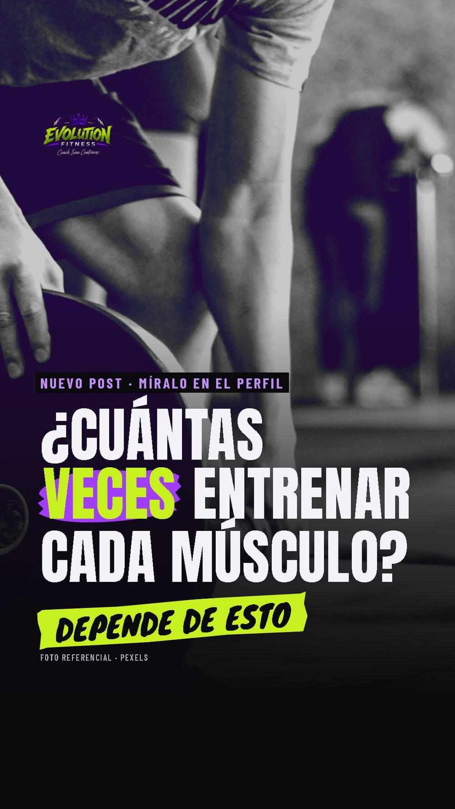
Texto que acompaña la publicación
Es una historia: el texto va en la imagen.
¿Qué hacemos con esta pieza?
☐ Va así ☐ Cambiar ☐ Fuera
Jue 1209:00ReelAtraer
Técnica: flexiones, 3 claves
Estado: Listo · Cómo sale: Sale solo, a su hora.
El reel completo, con la música propuesta: «Back And Ready (Instrumental)» (Colección de sonidos de Meta). Dale play con sonido. Si prefieres otra canción o tu voz, anótalo abajo.
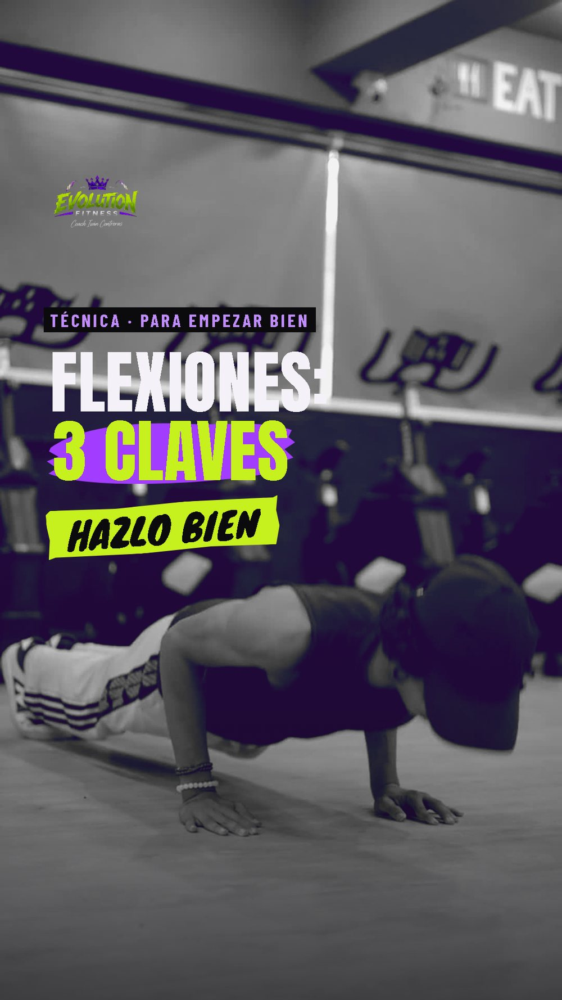
Portada
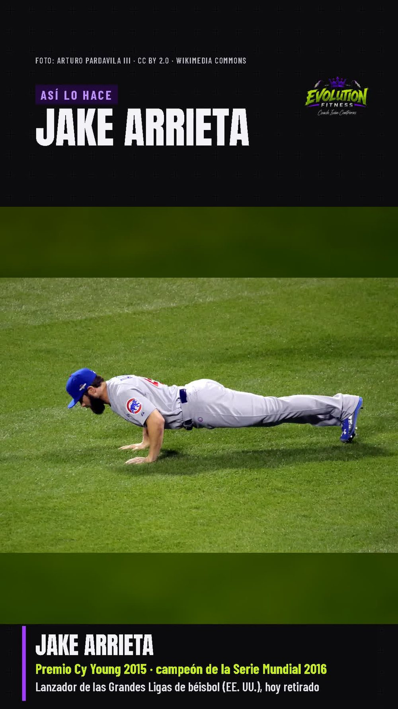
Momento 1 del reel
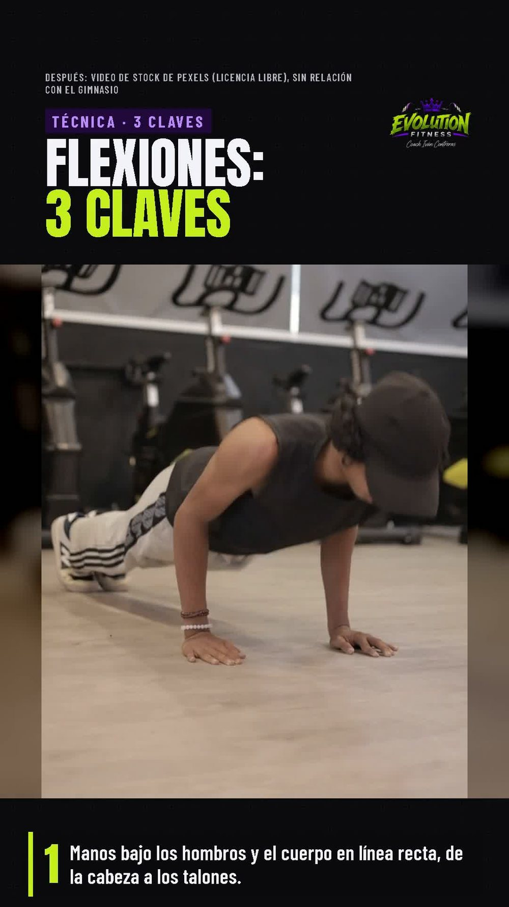
Momento 2 del reel
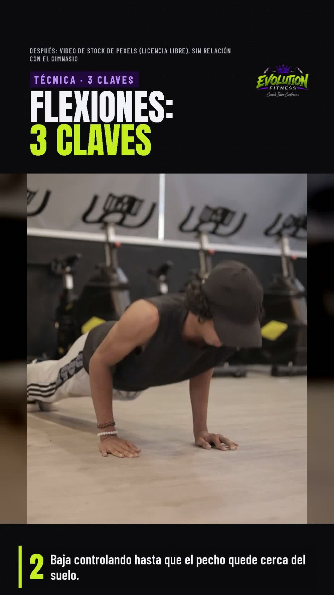
Momento 3 del reel
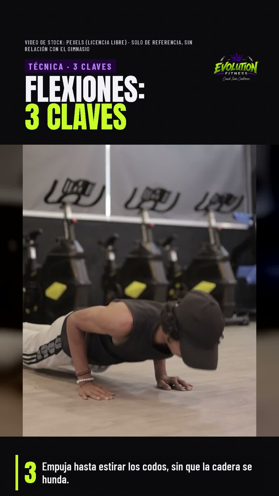
Momento 4 del reel
Texto que acompaña la publicación
Flexiones: 3 claves para hacerlas bien 👇
1. Manos bajo los hombros y el cuerpo en línea recta, de la cabeza a los talones.
2. Baja controlando hasta que el pecho quede cerca del suelo.
3. Empuja hasta estirar los codos, sin que la cadera se hunda.
¿Te cuestan? En la sala te enseñamos a empezar desde donde estás. Si recién empiezas, parte con poco peso y baja solo hasta donde controles. Si tienes una enfermedad, un dolor, estás embarazada o hace años que no entrenas, avísanos y consulta a tu médico antes.
Escríbenos por DM y te contamos cómo empezar.
Al comienzo: Jake Arrieta, lanzador de las Grandes Ligas, premio Cy Young 2015 y campeón de la Serie Mundial 2016.
Foto: Arturo Pardavila III (CC BY 2.0) · https://www.flickr.com/photos/apardavila/21871322994/
Después, video de stock de Pexels (licencia libre), sin relación con el gimnasio.
#ElBosque #EntrenamientoPersonalizado #EvolutionFitnessElBosque
📍 El Bosque
Qué se aprende al verlo: dónde van las manos, hasta dónde bajar y cómo mantener el cuerpo derecho. Abre con una foto suya haciendo flexiones en la cancha antes de un partido: Jake Arrieta, lanzador de béisbol de las Grandes Ligas de EE. UU., premio Cy Young 2015 y campeón de la Serie Mundial 2016 con los Cubs, hoy retirado (https://en.wikipedia.org/wiki/Jake_Arrieta). Es de Wikimedia Commons, con una licencia que permite usarla con crédito; el crédito y el enlace van en el texto. Después vienen las 3 claves sobre un video de stock (Pexels, licencia libre). Las claves son las básicas del ejercicio: revísalas y cambia lo que enseñes distinto. Si nos mandas un video tuyo haciendo el mismo ejercicio, usamos el tuyo.
¿Qué hacemos con esta pieza?
☐ Va así ☐ Cambiar ☐ Fuera
Jue 12durante el díaCaja de preguntasComunidad
«¿Qué ejercicio quieres aprender bien?»
Estado: Lista · Cómo sale: La sube Cristian a mano desde su celular ese día (Instagram no deja programar encuestas ni cajas de preguntas).
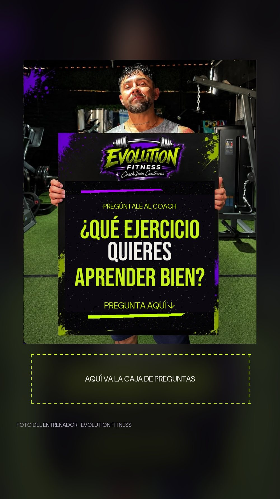
Texto que acompaña la publicación
Encabezado de la caja: «Pregúntale al profe (si es por una lesión, consulta a un profesional)». Es una historia: el texto va en la imagen.
¿Qué hacemos con esta pieza?
☐ Va así ☐ Cambiar ☐ Fuera
Vie 1317:00HistoriaComunidad
Tu respuesta a 1 o 2 preguntas de la caja del 29
Estado: Depende de las preguntas que lleguen · Cómo sale: Sale sola, a su hora.
Todavía sin imagen: se arma con las preguntas que lleguen.
Texto que acompaña la publicación
Se escribe con las preguntas que lleguen. Es una historia: el texto va en la imagen.
Nunca se muestra quién hizo la pregunta. Si prefieres responder con un audio o un video tuyo, mándalo y va ese.
¿Qué hacemos con esta pieza?
☐ Va así ☐ Cambiar ☐ Fuera
Sáb 1410:00HistoriaEducar
Video del finde: ¿cuántas veces por semana entrenar? (Charles Poliquin)
Estado: Lista · Cómo sale: La deja programada Cristian en Meta Business Suite, con el enlace (probado el 18-10 en la cuenta de prueba).
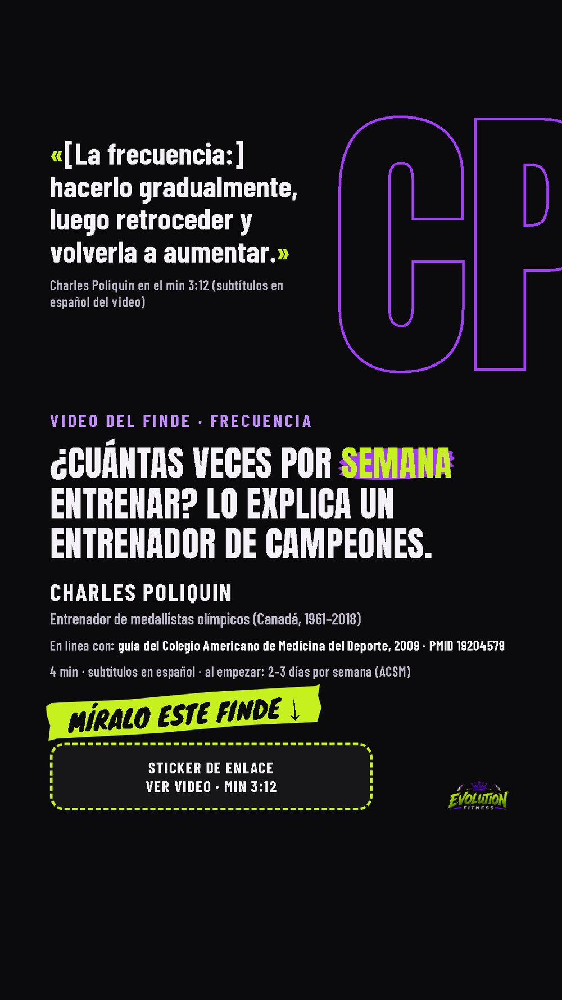
Texto que acompaña la publicación
Es una historia: el texto va en la imagen. El enlace lleva al minuto 3:12 del video (4 minutos, con subtítulos en español).
Colegio Americano de Medicina del Deporte (ACSM) · Medicine & Science in Sports & Exercise · 2009 · guía oficial
Se recomienda entrenar 2 a 3 días por semana al empezar, 3 a 4 con unos 6 meses de experiencia y 4 a 5 con años de experiencia.The recommendation for training frequency is 2-3 d x wk(-1) for novice training, 3-4 d x wk(-1) for intermediate training, and 4-5 d x wk(-1) for advanced trainingRespalda: que la frecuencia se sube de a poco, como dice Poliquin en el minuto 3:12
Va con el carrusel de la frecuencia de esa semana (Mié 11). Quién es: Charles Poliquin (Canadá, 1961–2018), entrenador de fuerza de medallistas olímpicos, como la luchadora Helen Maroulis y el lanzador de bala Adam Nelson (en.wikipedia.org/wiki/Charles_Poliquin). Qué se aprende: que entrenar más seguido se construye de a poco; se sube, se baja una semana y se vuelve a subir. Ojo: parte del video habla de atletas de élite que entrenan sentadilla 9 a 15 veces por semana; eso no es para empezar, y en la historia no se dice. Algunas ideas suyas (por ejemplo, su método para leer las hormonas por los pliegues de la piel) no las han comprobado estudios independientes: por eso usamos solo esta, que coincide con la guía del Colegio Americano de Medicina del Deporte. El video lo subió el canal MFQH con subtítulos en español; el original es suyo.
¿Qué hacemos con esta pieza?
☐ Va así ☐ Cambiar ☐ Fuera
04 · El mes, pieza por piezaSemana 4 · 16 al 21 de noviembre
Además, todos los días a las 17:00 sale la Frase del día (sección 06).
Lun 16durante el díaEncuestaComunidad
«¿Haces ejercicios de fuerza?»
Estado: Lista · Cómo sale: La sube Cristian a mano desde su celular ese día (Instagram no deja programar encuestas ni cajas de preguntas).
Texto que acompaña la publicación
Opciones: Sí / Todavía no. Es una historia: el texto va en la imagen.
¿Qué hacemos con esta pieza?
☐ Va así ☐ Cambiar ☐ Fuera
Mar 1717:00ReelAtraer
Un alumno cuenta cómo le ha ido
Estado: Falta el video · Cómo sale: Sale solo, a su hora.
Todavía sin imagen: se hace con el video que nos mandes.
Texto que acompaña la publicación
Se escribe con las palabras del alumno.
No da datos de salud ni de entrenamiento: no necesita fuente.
Necesita un video que grabes tú con un alumno que quiera contar su experiencia. Sin pesos, medidas ni fotos de antes y después. Si no hay video, pasa al mes siguiente.
¿Qué hacemos con esta pieza?
☐ Va así ☐ Cambiar ☐ Fuera
Mié 1812:00CarruselEducar
«Lo que dice la nueva guía de fuerza» · 6 láminas
Estado: Diseñado (láminas nuevas) · Cómo sale: Sale solo, a su hora.
Lámina 1 de 6Lámina 2 de 6Lámina 3 de 6Lámina 4 de 6Lámina 5 de 6Lámina 6 de 6
Desliza para ver las 6 láminas →
Texto que acompaña la publicación
Salió la nueva guía de fuerza del Colegio Americano de Medicina del Deporte (ACSM) y acá te la resumo.
Juntaron 137 revisiones con más de 30.000 personas. Hacer pesas mejora la fuerza, el músculo, el equilibrio y harto más. No existe la rutina perfecta; lo importante es entrenar y progresar de a poco. Ojo, son resultados en adultos sanos, no una receta hecha a tu medida.
¿Armamos tu plan? Escríbenos por DM y te contamos cómo empezar.
Fuente: la guía 2026 del Colegio Americano de Medicina del Deporte (ACSM), la mayor organización de medicina del deporte y ciencias del ejercicio del mundo (Currier y otros, Medicine & Science in Sports & Exercise). Fotos de referencia (Pexels).
#ElBosque #EntrenamientoPersonalizado #EvolutionFitnessElBosque
📍 El Bosque
Currier BS, … Schoenfeld BJ, … Phillips SM · Colegio Americano de Medicina del Deporte (ACSM) · Medicine & Science in Sports & Exercise 58(4):851-872 · Publicado el 05-03-2026 (número de abril 2026) · adultos sanos
Reunieron 137 revisiones (más de 30.000 personas). Comparado con no entrenar, el entrenamiento de fuerza mejoró la fuerza, el tamaño del músculo, la potencia, la resistencia, la velocidad al caminar, el equilibrio y otras funciones.We synthesized data from 137 systematic reviews (>30,000 participants). Compared with no exercise (control), RT significantly improved muscle strength, size (hypertrophy), power, endurance, contraction velocity, gait speed, balance, and multiple physical function outcomes.Respalda: portada y lámina 2
Pocos detalles de la rutina cambiaron los resultados principales.Few RT prescription (RTx) variables affected primary adaptations.Respalda: lámina 3
La fuerza mejoró con cargas pesadas (80 % o más del máximo), recorrido completo, 2 a 3 series, al comienzo de la sesión y 2 o más sesiones por semana.voluntary strength was enhanced by lifting heavier loads (≥80% one-repetition maximum), through a complete range of motion, for 2-3 sets, at the beginning of training sessions, and ≥2 sessions/wk.Respalda: lámina 4
El músculo creció más con más series: 10 o más por grupo muscular a la semana (texto completo del artículo).hypertrophy was enhanced by … higher volume (≥10 sets/muscle group/wk).Respalda: lámina 5
¿Qué hacemos con esta pieza?
☐ Va así ☐ Cambiar ☐ Fuera
Mié 1817:00HistoriaComunidad
«Nuevo post»
Estado: Lista · Cómo sale: Sale sola, a su hora.
Texto que acompaña la publicación
Es una historia: el texto va en la imagen.
¿Qué hacemos con esta pieza?
☐ Va así ☐ Cambiar ☐ Fuera
Jue 1909:00ReelCaptar
«Trae a un amigo»
Estado: Espera tu respuesta sobre la clase de regalo · Cómo sale: Sale solo, a su hora.
Todavía sin imagen: falta tu respuesta sobre la clase de regalo.
Texto que acompaña la publicación
Se escribe cuando nos confirmes cómo funciona la clase de regalo (la pregunta de la sección 05).
No da datos de salud ni de entrenamiento: no necesita fuente.
¿Qué hacemos con esta pieza?
☐ Va así ☐ Cambiar ☐ Fuera
Jue 19durante el díaCaja de preguntasComunidad
«¿Qué máquina del gym no sabes usar?»
Estado: Lista · Cómo sale: La sube Cristian a mano desde su celular ese día (Instagram no deja programar encuestas ni cajas de preguntas).
Texto que acompaña la publicación
Encabezado de la caja: «Pregúntale al profe (si es por una lesión, consulta a un profesional)». Es una historia: el texto va en la imagen.
¿Qué hacemos con esta pieza?
☐ Va así ☐ Cambiar ☐ Fuera
Vie 2017:00HistoriaComunidad
Tu respuesta a la caja del 5
Estado: Depende de las preguntas que lleguen · Cómo sale: Sale sola, a su hora.
Todavía sin imagen: se arma con las preguntas que lleguen.
Texto que acompaña la publicación
Se escribe con las preguntas que lleguen. Es una historia: el texto va en la imagen.
Nunca se muestra quién hizo la pregunta.
¿Qué hacemos con esta pieza?
☐ Va así ☐ Cambiar ☐ Fuera
Sáb 2110:00HistoriaEducar
Video del finde: tu músculo hace más que levantar peso (Iñigo San Millán)
Estado: Lista · Cómo sale: La deja programada Cristian en Meta Business Suite, con el enlace (probado el 18-10 en la cuenta de prueba).
Texto que acompaña la publicación
Es una historia: el texto va en la imagen. El enlace lleva al minuto 32:36 del podcast (en español). Es información general: no reemplaza la consulta con tu médico.
Cuando actúa la insulina, el músculo capta el 80 a 90 % de la glucosa.80–90% of the infused glucose is taken up by skeletal muscle under conditions of euglycemic hyperinsulinemiaRespalda: lo que dice San Millán en el minuto 32:36 («cerca del 80 %… se metabolizan en el músculo»)
Va con el carrusel de la guía de fuerza de esa semana (Mié 18). Quién es: Iñigo San Millán, fisiólogo español; fue investigador de la Universidad de Colorado y director de rendimiento del UAE Team Emirates, el equipo de ciclismo de Tadej Pogačar; en 2023 pasó a dirigir el área de alto rendimiento del Athletic Club de Bilbao. Qué se aprende: que el músculo es el órgano más grande y más activo del cuerpo, y que es el principal lugar donde se usa la glucosa cuando actúa la insulina; por eso entrenarlo cuida la salud, no solo la fuerza. El podcast dura 66 minutos y empieza con una advertencia dura sobre la diabetes y el Alzheimer: por eso el enlace lleva directo al minuto 32:36.
¿Qué hacemos con esta pieza?
☐ Va así ☐ Cambiar ☐ Fuera
05 · Lo que ya nos contasteAsí va a salir la información de tu gimnasio
Con lo que mandaste al grupo y con tu pauta ya armamos estas publicaciones. Así se van a ver, cuándo salen y por dónde:
Lo que nos contaste
Dónde sale
Cuándo
Clases a las 18:00 y a las 19:00, máximo 7 por horario, anotarse con 3 horas de anticipación, 10 minutos de tolerancia, avisar con 1 hora si no vas, toalla obligatoria
Historia «Así reservas tu clase», y después queda fija en la destacada «Reservas» del perfil
Lun 26-10, 09:00 (sale sola)
Tu evaluación con bioimpedancia y la pauta de alimentación
Historia «Tu evaluación»
Lun 2-11, 09:00 (sale sola)
Los dos horarios y los grupos chicos
Última lámina de cada carrusel y el texto de los reels del gimnasio
Todos los miércoles y los reels del jueves
Lun 26 · historia «Así reservas tu clase»Lun 2 · historia «Tu evaluación»
Mié 4 · última lámina del carrusel
No guardamos ningún dato de alumnos: la evaluación se cuenta en general, sin cifras de nadie.
Una duda que solo tú puedes resolver: la clase de regalo
¿Vale para cualquier persona que venga por primera vez? Y en «Trae a un amigo» (jueves 19), ¿es de regalo para los dos?
Clase de regalo: ¿cómo funciona?
☐ Sí, para cualquiera ☐ Con condiciones ☐ No hay clase de regalo
06 · Todos los díasFrase del día (historias)
Todos los días a las 17:00 sale sola una historia con una frase (casi todas de deportistas), siempre con foto. Las rediseñadas llevan la foto de quien dijo
la frase; las de Cristian van tal como él las juntó. Solo van frases con fuente comprobada (con su enlace) o frases populares que no se le atribuyen a nadie.
Son 28 frases distintas (8 imágenes que juntó Cristian, que van tal cual, y 20 rediseñadas con nuestro estilo),
una por día del Lun 26-10 al Sáb 5-12 (41 días): cuando se acaban, la rotación vuelve a empezar.
Nunca sale la misma persona dos días seguidos. Debajo de cada una: el día, quién la dice, de dónde sale la frase (con el enlace) y
los créditos de la foto. Si alguna no te gusta, márcala y la sacamos.
Créditos de las fotos rediseñadas (todas de Wikimedia Commons, con licencia libre): Foto: Agência Brasil Fotografias · Wikimedia Commons · CC BY 2.0 (creativecommons.org/licenses/by/2.0) · recortada y en B/N Foto: Agência Brasil Fotografias · Wikimedia Commons · CC BY 2.0 (creativecommons.org/licenses/by/2.0) · recortada, en B/N y con logos borrados Foto: Alex Carvalho · Wikimedia Commons · CC BY-SA 2.0 (creativecommons.org/licenses/by-sa/2.0) · recortada y en B/N · esta lámina (sin el logo del gym) también va bajo CC BY-SA 2.0 Foto: Andre Forget (Flickr de Andrew Scheer) · Wikimedia Commons · CC0 1.0 (creativecommons.org/publicdomain/zero/1.0) · recortada y en B/N Foto: Andymiah · Wikimedia Commons · CC BY-SA 4.0 (creativecommons.org/licenses/by-sa/4.0) · recortada, en B/N y con logos borrados · esta lámina (sin el logo del gym) también va bajo CC BY-SA 4.0 Foto: Augustas Didžgalvis · Wikimedia Commons · CC BY-SA 4.0 (creativecommons.org/licenses/by-sa/4.0) · recortada y en B/N · esta lámina (sin el logo del gym) también va bajo CC BY-SA 4.0 Foto: Catharina Caprino · Wikimedia Commons · CC BY 3.0 (creativecommons.org/licenses/by/3.0) · recortada y en B/N Foto: Claire Fridkin / WikiPortraits · Wikimedia Commons · CC BY-SA 4.0 (creativecommons.org/licenses/by-sa/4.0) · recortada, en B/N y con el letrero del fondo difuminado · esta lámina (sin el logo del gym) también va bajo CC BY-SA 4.0 Foto: Clémence LN · Wikimedia Commons · CC BY-SA 4.0 (creativecommons.org/licenses/by-sa/4.0) · recortada, en B/N y con logos borrados · esta lámina (sin el logo del gym) también va bajo CC BY-SA 4.0 Foto: Dick DeMarsico (New York World-Telegram & Sun) · Biblioteca del Congreso de EE. UU. · Wikimedia Commons · dominio público · recortada y en B/N Foto: Doha Stadium Plus Qatar · Wikimedia Commons · CC BY 2.0 (creativecommons.org/licenses/by/2.0) · recortada y en B/N Foto: Eóin Noonan / Web Summit (Sportsfile) · Wikimedia Commons · CC BY 2.0 (creativecommons.org/licenses/by/2.0) · recortada y en B/N Foto: Jeffrey Beall · Wikimedia Commons · CC BY-SA 3.0 (creativecommons.org/licenses/by-sa/3.0) · recortada y en B/N · esta lámina (sin el logo del gym) también va bajo CC BY-SA 3.0 Foto: Ministerio del Deporte · Estado de Chile · Wikimedia Commons · CC BY 3.0 CL (creativecommons.org/licenses/by/3.0/cl) · recortada, en B/N y con un logo borrado Foto: Presidencia de la República Mexicana · Wikimedia Commons · CC BY 2.0 (creativecommons.org/licenses/by/2.0) · recortada y en B/N Foto: Sgt. Joseph A. Lee, U.S. Marine Corps · Wikimedia Commons · dominio público · recortada, en B/N y con logos borrados Foto: Steve Lipofsky / Basketballphoto.com · Wikimedia Commons · CC BY-SA 3.0 (creativecommons.org/licenses/by-sa/3.0) · recortada, en B/N y con logos borrados · esta lámina (sin el logo del gym) también va bajo CC BY-SA 3.0 Foto: Super Festivals · Wikimedia Commons · CC BY 2.0 (creativecommons.org/licenses/by/2.0) · recortada y en B/N Foto: ericdwheeler · Wikimedia Commons · CC BY 2.0 (creativecommons.org/licenses/by/2.0) · recortada y en B/N
Las imágenes «tal cual» son las que juntó Cristian, publicadas sin cambios por decisión suya.
Lun 26-10 · día 1 de 41 · Francisca Crovetto · Fuente verificada: ESPN Deportes, 04-08-2024 Ver la fuente ↗ · Diseño EVOLUTION, con foto de la persona · Foto: Ministerio del Deporte · Estado de Chile · Wikimedia Commons · CC BY 3.0 CL (creativecommons.org/licenses/by/3.0/cl) · recortada, en B/N y con un logo borradoMar 27-10 · día 2 de 41 · Usain Bolt · Fuente verificada: Usain Bolt al recibir su cuarto premio Laureus (The Gleaner, 14-02-2017): «do not think limits, remember anything is possible»; es su lema. Ver la fuente ↗ · Imagen original, sin cambiosMié 28-10 · día 3 de 41 · Serena Williams · Fuente verificada: The National, 10-09-2012 Ver la fuente ↗ · Diseño EVOLUTION, con foto de la persona · Correcciones: Reemplaza a «Tu cerebro es un músculo…», que no tenía fuente. · Foto: Doha Stadium Plus Qatar · Wikimedia Commons · CC BY 2.0 (creativecommons.org/licenses/by/2.0) · recortada y en B/NJue 29-10 · día 4 de 41 · Muhammad Ali · Fuente verificada: Muhammad Ali, Fort Lauderdale News (14-04-1977) y Chicago Tribune (29-10-1977), según Quote Investigator. Ver la fuente ↗ · Imagen original, sin cambiosVie 30-10 · día 5 de 41 · Eliud Kipchoge · Fuente verificada: Oxford Union, dic-2017 (Citius Mag, 06-02-2018). Ver la fuente ↗ · Imagen original, sin cambiosSáb 31-10 · día 6 de 41 · Usain Bolt · Fuente verificada: Entrevista en el informe anual 2019 de PUMA (su patrocinador) Ver la fuente ↗ · Diseño EVOLUTION, con foto de la persona · Correcciones: Reemplaza a «No entrené 4 años para correr 9 segundos…», que no tenía fuente. · Foto: Augustas Didžgalvis · Wikimedia Commons · CC BY-SA 4.0 (creativecommons.org/licenses/by-sa/4.0) · recortada y en B/N · esta lámina (sin el logo del gym) también va bajo CC BY-SA 4.0Dom 1-11 · día 7 de 41 · Frase popular (sin autor) · Frase popular, sin autor (la imagen no nombra a nadie). · Imagen original, sin cambiosLun 2-11 · día 8 de 41 · Kristel Köbrich · Fuente verificada: La Tercera, 03-09-2023 Ver la fuente ↗ · Diseño EVOLUTION, con foto de la persona · Foto: Alex Carvalho · Wikimedia Commons · CC BY-SA 2.0 (creativecommons.org/licenses/by-sa/2.0) · recortada y en B/N · esta lámina (sin el logo del gym) también va bajo CC BY-SA 2.0Mar 3-11 · día 9 de 41 · Frase popular (sin autor) · Frase popular, sin autor (la imagen no nombra a nadie). · Imagen original, sin cambiosMié 4-11 · día 10 de 41 · Novak Djokovic · Fuente verificada: Conferencia en Roland-Garros 2024 (Tennis Majors, 04-06-2024) Ver la fuente ↗ · Diseño EVOLUTION, con foto de la persona · Correcciones: «La presión es un privilegio» es de Billie Jean King (sale el vie 13): para Djokovic usamos una frase suya, con fuente. · Foto: Andymiah · Wikimedia Commons · CC BY-SA 4.0 (creativecommons.org/licenses/by-sa/4.0) · recortada, en B/N y con logos borrados · esta lámina (sin el logo del gym) también va bajo CC BY-SA 4.0Jue 5-11 · día 11 de 41 · Serena Williams · Fuente verificada: paráfrasis de Serena Williams en Good Morning America (ABC), 31-08-2015. Ver la fuente ↗ · Imagen original, sin cambiosVie 6-11 · día 12 de 41 · Wayne Gretzky · Fuente verificada: AP en The New York Times, 11-05-1996 Ver la fuente ↗ · Diseño EVOLUTION, con foto de la persona · Foto: Andre Forget (Flickr de Andrew Scheer) · Wikimedia Commons · CC0 1.0 (creativecommons.org/publicdomain/zero/1.0) · recortada y en B/NSáb 7-11 · día 13 de 41 · Muhammad Ali · Fuente verificada: Muhammad Ali, Sunday Gleaner, 01-10-1978 (según Barry Popik): «sufre ahora y vive el resto de tu vida como un campeón». El «no te rindas» de la imagen se agregó después. Ver la fuente ↗ · Imagen original, sin cambiosDom 8-11 · día 14 de 41 · Michael Phelps · Fuente verificada: World Aquatics, 26-07-2023 Ver la fuente ↗ · Diseño EVOLUTION, con foto de la persona · Correcciones: Reemplaza a «No entrenes solo cuando tengas ganas…», que no tenía fuente y circulaba con dos nombres. · Foto: Agência Brasil Fotografias · Wikimedia Commons · CC BY 2.0 (creativecommons.org/licenses/by/2.0) · recortada y en B/NLun 9-11 · día 15 de 41 · Oleksandr Usyk · Fuente verificada: conferencia de prensa tras la pelea del 19-07-2025 (Reuters) Ver la fuente ↗ · Diseño EVOLUTION, con foto de la persona · Foto: Eóin Noonan / Web Summit (Sportsfile) · Wikimedia Commons · CC BY 2.0 (creativecommons.org/licenses/by/2.0) · recortada y en B/NMar 10-11 · día 16 de 41 · Jon Jones · Fuente verificada: UFC.com, 23-09-2011 Ver la fuente ↗ · Diseño EVOLUTION, con foto de la persona · Correcciones: Reemplaza a «Cuando crees que has alcanzado tu límite…», que no tenía fuente. · Foto: ericdwheeler · Wikimedia Commons · CC BY 2.0 (creativecommons.org/licenses/by/2.0) · recortada y en B/NMié 11-11 · día 17 de 41 · Michael Jordan · Fuente verificada: Discurso de ingreso al Salón de la Fama, 11-09-2009 (según la transcripción publicada) Ver la fuente ↗ · Diseño EVOLUTION, con foto de la persona · Correcciones: Reemplaza a «No entrenes hasta que te salga bien…», que no tenía fuente. · Foto: Steve Lipofsky / Basketballphoto.com · Wikimedia Commons · CC BY-SA 3.0 (creativecommons.org/licenses/by-sa/3.0) · recortada, en B/N y con logos borrados · esta lámina (sin el logo del gym) también va bajo CC BY-SA 3.0Jue 12-11 · día 18 de 41 · Tom Brady · Fuente verificada: Fortune, 14-06-2024 Ver la fuente ↗ · Diseño EVOLUTION, con foto de la persona · Correcciones: Reemplaza a «Si no crees en ti mismo…», que no tenía fuente. · Foto: Jeffrey Beall · Wikimedia Commons · CC BY-SA 3.0 (creativecommons.org/licenses/by-sa/3.0) · recortada y en B/N · esta lámina (sin el logo del gym) también va bajo CC BY-SA 3.0Vie 13-11 · día 19 de 41 · Billie Jean King · Fuente verificada: su libro «Pressure Is a Privilege», 2008 Ver la fuente ↗ · Diseño EVOLUTION, con foto de la persona · Foto: Claire Fridkin / WikiPortraits · Wikimedia Commons · CC BY-SA 4.0 (creativecommons.org/licenses/by-sa/4.0) · recortada, en B/N y con el letrero del fondo difuminado · esta lámina (sin el logo del gym) también va bajo CC BY-SA 4.0Sáb 14-11 · día 20 de 41 · Magnus Carlsen · Fuente verificada: Gulf News, 15-09-2018 Ver la fuente ↗ · Diseño EVOLUTION, con foto de la persona · Correcciones: Reemplaza a «No juego con la emoción…», que no tenía fuente. · Foto: Catharina Caprino · Wikimedia Commons · CC BY 3.0 (creativecommons.org/licenses/by/3.0) · recortada y en B/NDom 15-11 · día 21 de 41 · Katie Ledecky · Fuente verificada: AP, 20-07-2024 Ver la fuente ↗ · Diseño EVOLUTION, con foto de la persona · Correcciones: Reemplaza a «No entrenes solo cuando tengas ganas…», que no tenía fuente y circulaba con dos nombres. · Foto: Agência Brasil Fotografias · Wikimedia Commons · CC BY 2.0 (creativecommons.org/licenses/by/2.0) · recortada, en B/N y con logos borradosLun 16-11 · día 22 de 41 · Roger Federer · Fuente verificada: paráfrasis de su discurso en Dartmouth College, junio de 2024. Ver la fuente ↗ · Imagen original, sin cambiosMar 17-11 · día 23 de 41 · Saúl «Canelo» Álvarez · Fuente verificada: Récord, 06-05-2022 Ver la fuente ↗ · Diseño EVOLUTION, con foto de la persona · Correcciones: Reemplaza a «…el campeonato se gana a las 5 de la mañana», que no tenía fuente. · Foto: Presidencia de la República Mexicana · Wikimedia Commons · CC BY 2.0 (creativecommons.org/licenses/by/2.0) · recortada y en B/NMié 18-11 · día 24 de 41 · Tadej Pogačar · Fuente verificada: Cycling Weekly, 25-01-2025 Ver la fuente ↗ · Diseño EVOLUTION, con foto de la persona · Correcciones: La frase es real, pero circulaba cambiada: se corrigió con el texto de la fuente. · Foto: Clémence LN · Wikimedia Commons · CC BY-SA 4.0 (creativecommons.org/licenses/by-sa/4.0) · recortada, en B/N y con logos borrados · esta lámina (sin el logo del gym) también va bajo CC BY-SA 4.0Jue 19-11 · día 25 de 41 · Kobe Bryant · Fuente verificada: «Dear Basketball», The Players' Tribune, 29-11-2015 Ver la fuente ↗ · Diseño EVOLUTION, con foto de la persona · Correcciones: Reemplaza a «Si tienes miedo a fallar…», que no tenía fuente. · Foto: Sgt. Joseph A. Lee, U.S. Marine Corps · Wikimedia Commons · dominio público · recortada, en B/N y con logos borradosVie 20-11 · día 26 de 41 · Mike Tyson · Fuente verificada: AP, 19-08-1987 Ver la fuente ↗ · Diseño EVOLUTION, con foto de la persona · Foto: Super Festivals · Wikimedia Commons · CC BY 2.0 (creativecommons.org/licenses/by/2.0) · recortada y en B/NSáb 21-11 · día 27 de 41 · Martin Luther King Jr. · Fuente verificada: Discurso «Keep Moving from This Mountain», Spelman College, 10-04-1960 (archivo de Stanford) Ver la fuente ↗ · Diseño EVOLUTION, con foto de la persona · Correcciones: La frase es de Martin Luther King, no de Neymar: por eso va con su foto. · Foto: Dick DeMarsico (New York World-Telegram & Sun) · Biblioteca del Congreso de EE. UU. · Wikimedia Commons · dominio público · recortada y en B/NDom 22-11 · día 28 de 41 · Usain Bolt · Fuente verificada: Entrevista en el informe anual 2019 de PUMA (su patrocinador) Ver la fuente ↗ · Diseño EVOLUTION, con foto de la persona · Correcciones: Reemplaza a «No hay atajos para ser el mejor…», que no tenía fuente. · Foto: Augustas Didžgalvis · Wikimedia Commons · CC BY-SA 4.0 (creativecommons.org/licenses/by-sa/4.0) · recortada y en B/N · esta lámina (sin el logo del gym) también va bajo CC BY-SA 4.0Lun 23-11 · día 29 de 41 · Muhammad Ali · Fuente verificada: Muhammad Ali, Fort Lauderdale News (14-04-1977) y Chicago Tribune (29-10-1977), según Quote Investigator. Ver la fuente ↗ · Imagen original, sin cambiosMar 24-11 · día 30 de 41 · Usain Bolt · Fuente verificada: Entrevista en el informe anual 2019 de PUMA (su patrocinador) Ver la fuente ↗ · Diseño EVOLUTION, con foto de la persona · Correcciones: Reemplaza a «No entrené 4 años para correr 9 segundos…», que no tenía fuente. · Foto: Augustas Didžgalvis · Wikimedia Commons · CC BY-SA 4.0 (creativecommons.org/licenses/by-sa/4.0) · recortada y en B/N · esta lámina (sin el logo del gym) también va bajo CC BY-SA 4.0Mié 25-11 · día 31 de 41 · Serena Williams · Fuente verificada: paráfrasis de Serena Williams en Good Morning America (ABC), 31-08-2015. Ver la fuente ↗ · Imagen original, sin cambiosJue 26-11 · día 32 de 41 · Francisca Crovetto · Fuente verificada: ESPN Deportes, 04-08-2024 Ver la fuente ↗ · Diseño EVOLUTION, con foto de la persona · Foto: Ministerio del Deporte · Estado de Chile · Wikimedia Commons · CC BY 3.0 CL (creativecommons.org/licenses/by/3.0/cl) · recortada, en B/N y con un logo borradoVie 27-11 · día 33 de 41 · Frase popular (sin autor) · Frase popular, sin autor (la imagen no nombra a nadie). · Imagen original, sin cambiosSáb 28-11 · día 34 de 41 · Usain Bolt · Fuente verificada: Entrevista en el informe anual 2019 de PUMA (su patrocinador) Ver la fuente ↗ · Diseño EVOLUTION, con foto de la persona · Correcciones: Reemplaza a «No hay atajos para ser el mejor…», que no tenía fuente. · Foto: Augustas Didžgalvis · Wikimedia Commons · CC BY-SA 4.0 (creativecommons.org/licenses/by-sa/4.0) · recortada y en B/N · esta lámina (sin el logo del gym) también va bajo CC BY-SA 4.0Dom 29-11 · día 35 de 41 · Roger Federer · Fuente verificada: paráfrasis de su discurso en Dartmouth College, junio de 2024. Ver la fuente ↗ · Imagen original, sin cambiosLun 30-11 · día 36 de 41 · Kristel Köbrich · Fuente verificada: La Tercera, 03-09-2023 Ver la fuente ↗ · Diseño EVOLUTION, con foto de la persona · Foto: Alex Carvalho · Wikimedia Commons · CC BY-SA 2.0 (creativecommons.org/licenses/by-sa/2.0) · recortada y en B/N · esta lámina (sin el logo del gym) también va bajo CC BY-SA 2.0Mar 1-12 · día 37 de 41 · Frase popular (sin autor) · Frase popular, sin autor (la imagen no nombra a nadie). · Imagen original, sin cambiosMié 2-12 · día 38 de 41 · Wayne Gretzky · Fuente verificada: AP en The New York Times, 11-05-1996 Ver la fuente ↗ · Diseño EVOLUTION, con foto de la persona · Foto: Andre Forget (Flickr de Andrew Scheer) · Wikimedia Commons · CC0 1.0 (creativecommons.org/publicdomain/zero/1.0) · recortada y en B/NJue 3-12 · día 39 de 41 · Eliud Kipchoge · Fuente verificada: Oxford Union, dic-2017 (Citius Mag, 06-02-2018). Ver la fuente ↗ · Imagen original, sin cambiosVie 4-12 · día 40 de 41 · Oleksandr Usyk · Fuente verificada: conferencia de prensa tras la pelea del 19-07-2025 (Reuters) Ver la fuente ↗ · Diseño EVOLUTION, con foto de la persona · Foto: Eóin Noonan / Web Summit (Sportsfile) · Wikimedia Commons · CC BY 2.0 (creativecommons.org/licenses/by/2.0) · recortada y en B/NSáb 5-12 · día 41 de 41 · Muhammad Ali · Fuente verificada: Muhammad Ali, Sunday Gleaner, 01-10-1978 (según Barry Popik): «sufre ahora y vive el resto de tu vida como un campeón». El «no te rindas» de la imagen se agregó después. Ver la fuente ↗ · Imagen original, sin cambios
Desliza para ver las 41 frases →
¿Qué hacemos con las frases del día?
☐ Va así ☐ Cambiar ☐ Fuera
07 · Videos de expertos«Video del finde»: así van a salir
Cada sábado sale una historia que recomienda un video de un experto de verdad, para verlo con calma el fin de semana. La historia
lleva un enlace que abre el video completo. Cuando el video se puede reutilizar (dominio público o licencia libre), la historia trae además unos
segundos del video; si no, lleva su frase. Estas son las cuatro del primer mes, tal como se van a publicar:
Sáb 31 · Stuart Phillips · su frase del minuto 7:43 y el enlace a la entrevistaSáb 7 · podcast con Milo Wolf · con 23 segundos y su voz
Sáb 14 · Charles Poliquin · su frase del minuto 3:12 y el enlace al videoSáb 21 · Iñigo San Millán · su frase del minuto 33:00 y el enlace al podcast
El fragmento de Phillips (minuto 7:35 a 8:15) tal como está en YouTube. En la historia no va el video: el video es de otro canal y no tiene
una licencia que permita subirlo a otra cuenta. Va su frase en la imagen, traducida, y el enlace para verlo completo.
Video
De qué trata
Quién es y por qué confiar
Stuart Phillips en «Talking With Docs» · minuto 7:43 · en inglés, con subtítulos automáticos
Cuánta proteína necesitas de verdad: el mínimo oficial evita carencias, y para cuidar el músculo conviene algo más
Profesor de Kinesiología en la Universidad McMaster (Canadá), investiga proteína y músculo. La cifra que da (1,2 a 1,6 g por kilo al día) está en
su artículo de 2016.
Milo Wolf, PhD en el podcast «Better For Results» (2024) · entrevista completa · en inglés
Si conviene entrenar con el músculo estirado (repeticiones parciales en la parte baja del movimiento)
Doctor en ciencias del deporte; investiga justo este tema. Su estudio: Wolf y otros, PeerJ, 2025. Vende asesorías en línea.
Charles Poliquin en el canal MFQH (2014) · minuto 3:12 · en inglés, con subtítulos en español
Cuántas veces por semana entrenar, y por qué esa cantidad se sube de a poco
Iñigo San Millán en el podcast «Otra Forma» (2025) · minuto 32:36 · en español
Por qué el músculo es clave para la salud: según él, es el órgano más grande y más activo, y es el principal lugar donde se usa la glucosa cuando actúa la insulina
Si quieres, puedes reemplazar o complementar estas piezas con audios o videos tuyos explicando un tema. Mándalos por WhatsApp y los adaptamos.
¿Qué cambiarías de esta sección?
☐ Va así ☐ Cambiar ☐ Fuera
08 · Tu parteLo que necesitamos de ti
Aprobar el mes. Una vez al mes te llega una guía como esta. Marcas lo que va y lo que cambiarías. Lo que no apruebas no sale.
Mandarnos lo que tengas del gimnasio. Si tienes videos, fotos, grabaciones de clases o audios explicando algo, mándalos por WhatsApp
cuando quieras y los adaptamos para publicarlos. Este mes hay 4 piezas que necesitan un video tuyo:
Jue 29 · La sala en 15 segundos: un video de la sala (15 a 30 segundos, celular en vertical) y qué te gustaría que se viera.
Jue 5 · Más que una lista de ejercicios: tú corrigiendo o explicando en una clase (20 a 30 segundos).
Mar 10 · ¿Al fallo en todas las series?: tú explicándolo con tus palabras (unos 20 segundos).
Mar 17 · Un alumno cuenta cómo le ha ido: un alumno que quiera contar su experiencia.
Si alguno no llega a tiempo, esa pieza pasa al mes siguiente y ese día no sale reel.
Reemplazar lo que quieras por algo tuyo. Cualquier pieza que enseña algo (por ejemplo, los reels de técnica con videos de stock)
la puedes cambiar o completar con un video o un audio tuyo enseñando lo mismo.
Una sola vez: darle acceso a la cuenta a Cristian (sección 09, paso a paso con fotos). Tu contraseña no se pide nunca.
¿Qué cambiarías de esta sección?
☐ Va así ☐ Cambiar ☐ Fuera
09 · Conectar la cuentaCómo darle acceso a Cristian sin dar tu contraseña (una sola vez)
Para que lo que apruebas se publique solo, Meta (la empresa de Instagram y Facebook) tiene que saber que Cristian puede publicar en la cuenta
del gimnasio. Se hace dándole acceso parcial desde Meta Business Suite, la herramienta oficial de Meta para manejar la página de un negocio.
Esta sección explica cada paso con una foto, para que lo puedas hacer por tu cuenta, a tu ritmo.
Por qué así: tu contraseña no sale de tu teléfono. Cristian recibe solo los 3 permisos que tú marques: Contenido
(crear, programar y también borrar publicaciones), Estadísticas (ver las cifras) y Actividad de la comunidad (ver, responder y eliminar comentarios no deseados).
Meta los describe así en sus pantallas, y lo vas a leer en las fotos. Se usan solo para lo que tú apruebas en esta guía.
Con esos permisos no puede cambiar tu contraseña ni tu correo, sacarte de la cuenta, tocar anuncios o pagos, ni darle acceso a otras personas.
Tú sigues siendo el dueño y se lo quitas cuando quieras (parte D, al final).
Antes de empezar
Hazlo en un computador si puedes, aunque sea uno prestado: las pantallas de Meta Business Suite están pensadas para computador.
En el celular también se puede, pero se ve chico y hay que agrandar con los dedos (mira el recuadro de abajo).
Vas a entrar con tu Facebook personal: el mismo con el que manejas la página del gimnasio. Ten a mano su correo y su contraseña,
y también el usuario y la contraseña del Instagram del gimnasio. Meta te los puede pedir. Los escribes tú, en la página de Meta.
Ten el celular cerca: Meta puede mandarte un código por mensaje para confirmar que eres tú.
Las fotos son de nuestra cuenta de prueba («EVO Prueba»). En tu pantalla vas a ver el nombre del gimnasio. Lo marcado con
recuadro rosado es lo que hay que tocar. Lo que está en gris se deja apagado.
Meta cambia sus menús de vez en cuando. Si un nombre no calza exacto, busca uno parecido: la idea es la misma.
Debajo de cada foto hay un botón «✏️ Rayar encima»: es de esta guía, no de Meta. Sirve para marcar la foto si algo no calzó con tu pantalla. No toca tu cuenta.
Si en algún paso algo no calza y no sabes qué hacer: detente. En la parte C, mientras no toques «Enviar», no se manda nada. Puedes retomarlo otro día desde ese mismo paso.
Palabras que vas a ver en Meta
Meta Business Suite (business.facebook.com): la página de Meta para manejar la página de Facebook y el Instagram de un negocio. Es gratis.
Portfolio comercial: la «carpeta» del negocio dentro de Meta, donde quedan guardados la página y el Instagram del gimnasio.
Activos: así le dice Meta a tu página de Facebook y a tu Instagram. «Conectar activos» = unir el Instagram con la página.
Acceso parcial: la persona puede hacer solo lo que tú marcas. Lo contrario es control total, que no se usa aquí.
📱 Si lo haces desde el celular
Lo de Instagram (parte A) se hace en la app de Instagram, como siempre.
Lo de Meta Business Suite (partes B, C y D): abre el navegador del celular (Chrome o Safari, no la app de Meta Business Suite) y
entra a business.facebook.com. La app de Business Suite no muestra todas las opciones de «Configuración».
Si el navegador te manda a la app, o no ves el engranaje ⚙: pide la versión para computador (el navegador la llama «sitio de escritorio»).
En Chrome: los tres puntos ⋮ de arriba → marca «Sitio de escritorio». En Safari (iPhone): el botón «aA» o ⋯ → «Solicitar sitio de escritorio».
La pantalla se ve chica: agranda con dos dedos.
Parte A · Revisar 3 cosas
Si las 3 están bien, sáltate la parte B y pasa directo a la parte C.
¿El Instagram del gimnasio es «cuenta profesional»? Abre Instagram y ve a tu perfil. Si debajo de tu nombre aparece un botón
«Panel profesional», ya lo es. Si no aparece, haz el paso B1.
¿El Instagram está dentro de Meta Business Suite? En business.facebook.com toca el engranaje ⚙ Configuración (abajo a la
izquierda) → en el menú, Cuentas → Cuentas de Instagram. Si aparece el Instagram del gimnasio, está. Si dice «No se agregó ninguna cuenta de
Instagram», haz el paso B2.
¿El Instagram está conectado a la página de Facebook? En el mismo menú: Cuentas → Páginas → toca la página del gimnasio →
pestaña «Activos conectados». Si ahí aparece el Instagram del gimnasio, está. Si no, haz el paso B3.
Parte B · Solo si en la parte A faltó algo
B1
Pasar Instagram a cuenta profesional
👀 Vas a ver: En la app de Instagram, tu perfil. En el computador, instagram.com.
👆 Qué tocar:
En el celular: tu perfil → las tres rayas ☰ de arriba a la derecha → «Tipo de cuenta y herramientas» → «Cambiar a cuenta profesional».
En el computador:☰ Más (abajo a la izquierda) → Configuración → «Tipo de cuenta y herramientas» → «Cambiar a cuenta profesional».
Si no encuentras la opción: en Configuración hay un buscador arriba. Escribe profesional.
Cuando pregunte «¿Qué opción te describe mejor?», elige Negocio → Siguiente. De categoría elige «Gimnasio».
Elige «Negocio» y toca «Siguiente». La foto es del computador: en la app se ve parecido, con las mismas dos opciones
✅ Salió bien si: en tu perfil aparece el botón «Panel profesional». Tus fotos y tus seguidores siguen iguales: no se borra nada.
⚠️ Si sale un error: si Instagram te pide conectar una página de Facebook en ese momento, puedes elegir la del gimnasio o tocar «Omitir»: se conecta en el paso B3. Si no te deja elegir «Negocio», revisa que no sea una cuenta privada: Configuración → Privacidad de la cuenta → apágala.
B2
Agregar el Instagram a Meta Business Suite
👀 Vas a ver: En business.facebook.com → ⚙ Configuración → Cuentas → Cuentas de Instagram, una página casi vacía que dice «No se agregó ninguna cuenta de Instagram».
👆 Qué tocar:
Toca el botón azul «+ Agregar».
Sale un aviso. Toca «Agregar cuenta de Instagram».
Se abre una ventana de Instagram: escribe el usuario y la contraseña del Instagram del gimnasio y toca Iniciar sesión.
Primero «+ Agregar» (abajo). Sale un aviso de Meta que dice que solo se pueden agregar cuentas profesionales: toca «Agregar cuenta de Instagram»
✅ Salió bien si: en la lista de «Cuentas de Instagram» aparece el Instagram del gimnasio.
⚠️ Si sale un error: si la ventana de Instagram no se abre, el navegador la está bloqueando: busca arriba un aviso que diga «ventana emergente bloqueada» (una ventana chica que se abre encima) y toca Permitir. Si dice que la cuenta ya pertenece a otro «portfolio comercial», es que otra persona la agregó antes (por ejemplo, una agencia): pídele a esa persona que la quite, o pega el texto para tu asistente de IA (al final de esta sección) y muéstrale tu pantalla.
B3
Conectar el Instagram a la página de Facebook
👀 Vas a ver: En ⚙ Configuración → Cuentas → Páginas, la página del gimnasio con unos botones arriba: «Asignar personas», «Asignar socio» y «Conectar activos».
👆 Qué tocar:
Toca «Conectar activos» → «Cuenta de Instagram».
Sale la ventana «Conectar con Instagram». Toca «Iniciar sesión en Instagram», entra con el Instagram del gimnasio y toca Continuar.
La ventana que sale: toca «Iniciar sesión en Instagram»
Esa ventana dice que las personas con acceso «podrán administrar tareas» de la página y del Instagram. Es un aviso general de Meta: lo que puede hacer Cristian lo eliges tú en el paso C4, con 3 permisos.
Salió bien: «Se conectó Instagram». Toca «Cerrar», el botón blanco
✅ Salió bien si: aparece el mensaje «Se conectó Instagram», como en la segunda foto. Toca Cerrar (el botón blanco). No toques el azul «Crear publicación».
⚠️ Si sale un error: si dice que ese Instagram ya está conectado a otra página, primero hay que desconectarlo de esa otra página (en la app de Instagram: Editar perfil → Página → Desconectar) y repetir este paso. Si Meta dice «Se produjo un error», cierra la ventana, recarga la página y mira la pestaña «Activos conectados»: muchas veces ya quedó conectado aunque haya dicho error.
Parte C · Darle el acceso a Cristian
C1
Entrar a «Personas»
👀 Vas a ver: Meta Business Suite (business.facebook.com), con el nombre del gimnasio arriba a la izquierda.
👆 Qué tocar:
Toca el engranaje ⚙ Configuración (abajo a la izquierda).
En el menú que se abre: Usuarios → Personas.
El engranaje (abajo a la izquierda) y «Personas», dentro de «Usuarios»
✅ Salió bien si: a la derecha sale la lista de personas que tienen acceso (al principio, solo tú) y un botón azul «+ Invitar personas».
⚠️ Si sale un error: si te pide crear un «portfolio comercial», sigue los pasos y ponle el nombre del gimnasio: es la carpeta donde Meta guarda la página y el Instagram del negocio (y después revisa la parte A). Si no ves «Personas» ni «Invitar personas», tu Facebook no tiene control total de ese negocio: detente aquí. Lo tiene que hacer la persona que creó el negocio en Meta (o que te dé a ti control total).
C2
Escribir el correo de Cristian
👀 Vas a ver: una ventana que dice «Invitar a personas», con 4 etapas a la izquierda: Ingresar correo, Otorgar acceso, Asignar activos y Revisar.
👆 Qué tocar:
Toca «+ Invitar personas».
Escribe cstamigo@gmail.com (todo junto, sin espacios).
Deja apagado el interruptor «Acceso temporal» (sirve para que el acceso se borre solo en una fecha; aquí no se usa).
✅ Salió bien si: el botón «Siguiente» se pone azul y pasas a la etapa «Otorgar acceso».
⚠️ Si sale un error: si el botón «Siguiente» sigue gris, el correo quedó mal escrito: revisa que diga exactamente cstamigo@gmail.com, sin espacio al final.
C3
Elegir «acceso parcial»
👀 Vas a ver: la etapa «Otorgar acceso»: pregunta qué acceso le das a la persona en el negocio.
👆 Qué tocar:
Elige la opción que no es «Control total». Según la pantalla se llama «Acceso parcial», «Acceso de empleado» o «Acceso básico».
No elijas «Control total» ni actives nada de «Finanzas» o «Pagos».
Toca Siguiente.
Las 4 etapas de la ventana. Estás en «Otorgar acceso» y después viene «Asignar activos»
✅ Salió bien si: pasas a la etapa «Asignar activos», la tercera de la lista de la izquierda.
⚠️ Si sale un error: si solo aparece la opción «Control total», no sigas: cierra la ventana con la ✕. No se envía nada y no se rompe nada. Si usas un asistente de IA, el texto del final de esta sección le explica qué buscar en tu pantalla.
C4
Marcar la página, el Instagram y los 3 permisos
👀 Vas a ver: la etapa «Asignar activos»: a la izquierda los tipos de cuenta (Páginas, Cuentas de Instagram…), al medio tus cuentas y a la derecha una lista de interruptores.
👆 Qué tocar:
Toca Páginas y marca la página del gimnasio.
A la derecha, en «Acceso parcial», enciende 3 interruptores: Contenido, Actividad de la comunidad y Estadísticas.
Deja apagados «Mensajes y llamadas», «Anuncios» y todo lo que diga «control total».
Ahora toca Cuentas de Instagram, marca el Instagram del gimnasio y enciende los mismos 3 (si alguno no aparece, enciende los que estén).
Toca Siguiente.
Enciende Contenido, Actividad de la comunidad y Estadísticas. Lo gris se deja apagado
✅ Salió bien si: los 3 interruptores quedan en azul, en la página y en el Instagram. Qué permite cada uno (así lo dice Meta): Contenido = crear, programar y borrar publicaciones; Estadísticas = ver cómo le va a cada publicación; Actividad de la comunidad = ver, responder y eliminar comentarios no deseados. Se usan solo para publicar lo que apruebas y para el resumen de comentarios de la sección 11.
⚠️ Si sale un error: si el Instagram del gimnasio no aparece en la lista, falta el paso B2 o el B3: termina la invitación solo con la página y después haz esos pasos. Cuando el Instagram ya esté, entra a ⚙ Configuración → Cuentas de Instagram → el gimnasio → «Asignar personas», elige a Cristian y enciende los mismos 3.
C5
Revisar y enviar la invitación
👀 Vas a ver: la etapa «Revisar»: un resumen con el correo de Cristian, la página, el Instagram y los permisos que marcaste.
👆 Qué tocar:
Revisa que diga cstamigo@gmail.com, que estén la página y el Instagram del gimnasio y que no diga «Control total».
Toca «Enviar solicitud» o «Enviar invitación» (depende de la pantalla).
«Revisar» es la última etapa: ahí está el botón para enviar
✅ Salió bien si: en Usuarios → Personas aparece cstamigo@gmail.com con la palabra «Pendiente» (o «Invitación enviada»). Ya terminaste: mándale un WhatsApp a Cristian que diga «ya te mandé la invitación». Él la acepta desde su correo y, cuando la acepta, en vez de «Pendiente» aparece su nombre.
⚠️ Si sale un error: si sale «Se produjo un error. Vuelve a intentarlo más tarde»: no la mandes de nuevo todavía. Toca Aceptar, recarga la página y mira Usuarios → Personas. En otras pantallas de Meta ya pasó varias veces que decía error y la acción igual había quedado hecha. Si cstamigo@gmail.com aparece, está listo. Si no aparece, repite desde el paso C2. Si Meta te pide la contraseña o un código, es normal: lo escribes tú.
Parte D · Para quitarle el acceso cuando quieras
D
Quitar a una persona
👀 Vas a ver: ⚙ Configuración → Usuarios → Personas: la lista de quién tiene acceso al negocio.
👆 Qué tocar:
Toca el nombre de Cristian (o su correo) → Eliminar y confirma. Eso le quita el acceso a todo: la página y el Instagram.
Si prefieres quitarlo de una sola cuenta: ⚙ Configuración → Cuentas → Páginas (o Cuentas de Instagram) → el gimnasio → pestaña Personas → el basurero 🗑 al lado de su nombre (como en la foto). Así sigue en la otra cuenta.
Si lo quitas de una sola cuenta: el basurero está a la derecha de cada persona, junto a «Administrar»
✅ Salió bien si: Cristian ya no aparece en Usuarios → Personas. Si lo eliminaste desde ahí, desde ese momento no puede publicar nada en ninguna de las dos cuentas.
⚠️ Si sale un error: si no ves «Eliminar», busca los tres puntos ⋯ al lado de su nombre o la palabra «Quitar acceso».
¿Prefieres que te guíe tu asistente de inteligencia artificial?
Si usas un asistente de IA (inteligencia artificial), copia este texto y pégaselo. Te va a guiar paso a paso. Si tu asistente puede manejar el
navegador, lo hace por ti y solo te pide lo que tiene que hacer una persona: entrar con tu clave y confirmar.
Hola. Necesito tu ayuda con algo de Meta (Facebook e Instagram). Háblame en español, simple, un paso a la vez, y espera a que te diga «listo» antes de seguir.
Qué quiero lograr: darle ACCESO PARCIAL a Cristian (correo: cstamigo@gmail.com) a la página de Facebook y a la cuenta de Instagram de mi gimnasio, EVOLUTION Fitness, desde Meta Business Suite (business.facebook.com). Con 3 permisos: «Contenido», «Estadísticas» y «Actividad de la comunidad» (si alguno no aparece, los que estén). Nada más: sin «control total», sin anuncios, sin pagos.
Cómo quiero que me ayudes:
1. Si puedes manejar mi navegador, hazlo tú. Si no, dime exactamente qué tocar en cada paso.
2. En cada paso, pídeme una captura de pantalla de lo que estoy viendo y dime qué hacer según lo que aparece. Los menús de Meta cambian: guíate por mi pantalla, no de memoria.
3. Antes de empezar, revisemos juntos que: (a) mi Instagram sea cuenta profesional; (b) esté conectado a la página de Facebook del gimnasio; (c) los dos estén dentro de Meta Business Suite. Si falta algo, guíame para arreglarlo.
4. Los pasos son, más o menos: Configuración (engranaje) → Usuarios → Personas → Invitar personas → escribir cstamigo@gmail.com → elegir acceso parcial → marcar la página y la cuenta de Instagram del gimnasio → activar «Contenido», «Estadísticas» y «Actividad de la comunidad» → Enviar invitación → revisar que en Personas aparezca cstamigo@gmail.com como «Pendiente».
5. Al final, muéstrame dónde se ve quién tiene acceso y cómo se lo quito si un día quiero.
Reglas que no se rompen:
- Nunca me pidas mi contraseña ni la escribas tú. Si hay que iniciar sesión o poner un código de verificación, lo hago yo y te aviso.
- No aceptes ni cambies nada que no sea este acceso. Antes de tocar «Enviar invitación» o cualquier botón de confirmar, pregúntame.
- No le des a nadie «control total» ni acceso a anuncios o pagos.
- Si algo no calza con lo que te dije, detente y pregúntame.
¿Qué cambiarías de esta sección?
☐ Va así ☐ Cambiar ☐ Fuera
10 · Música, encuestas, cajas y enlacesCómo se maneja (tú no haces nada)
Lo que sale solo: carruseles, reels sin canción e historias normales. Se programan una vez al mes, después de que apruebas.
Lo que sube Cristian a mano: las encuestas, las cajas de preguntas y los reels con canción. Instagram no deja
programar esas cosas desde fuera de su app. A Cristian le llega un aviso el día que toca, con todo listo, y lo sube desde su celular.
Las historias con enlace (por ejemplo, el «Video del finde») las deja programadas Cristian en Meta Business Suite. Lo probamos el 18 de octubre en nuestra cuenta de prueba y salió sola a su hora.
Música: solo la que Instagram ofrece para negocios (la «Colección de sonidos de Meta»). Las canciones de artistas conocidos son para cuentas personales:
en la cuenta de un gimnasio, el dueño de la canción puede silenciar o bajar el video.
¿Qué cambiarías de esta sección?
☐ Va así ☐ Cambiar ☐ Fuera
11 · Comentarios y preguntasQué pasa con lo que escribe la gente
Los comentarios, los votos de las encuestas y las preguntas de las cajas quedan anotados en una planilla. Cada viernes Cristian recibe un resumen:
lo que más pregunta la gente y cuántas personas pidieron información (para responderles, Cristian entra a Instagram). Nadie responde de forma automática: responde Cristian, o tú si lo prefieres.
En la planilla no queda el usuario de Instagram de nadie y todo se borra a los 90 días.
Cómo se conecta: si le diste a Cristian el acceso de la sección 09, lo conecta él y tú no haces nada. Si prefieres conectarlo tú
con tu propia cuenta, Cristian tiene una guía paso a paso con fotos (unos 15 minutos, una sola vez). Ya lo probamos en nuestra cuenta de prueba.
¿Qué cambiarías de esta sección?
☐ Va así ☐ Cambiar ☐ Fuera
12 · CrecerCómo ganar seguidores
Según los estudios y lo que explica el mismo Instagram, una cuenta crece con:
Reels. Son lo que más ve gente que todavía no te sigue (Instagram, 2023).
Contenido útil y positivo, que la gente guarde y comparta. En Explorar, Instagram mira sobre todo los «me gusta», los guardados y los
compartidos (Instagram, 2023), y lo positivo y útil se comparte más (Berger y Milkman, 2012).
Contenido propio, no copiado de otras cuentas (Instagram, 2024).
Colaborar con otras cuentas, para que te muestren a su público. Un estudio encontró que lo que publica una cuenta conocida trae más
seguidores nuevos que lo que publica la propia marca (Gong y otros, 2017).
Con quién se podría colaborar en la comuna (ejemplos)
Son solo ideas para que las conozcas. No hemos contactado a nadie, y si alguna te interesa, la conversamos.
Tienda de implementos deportivos, con rodillos de automasaje.
Los rodillos son un implemento que se puede sumar a la sala, y enseñar a usarlos da para contenido útil.
¿Alguna de estas te interesa?
☐ Va así ☐ Cambiar ☐ Fuera
FuentesLas fuentes de las secciones 01 a 07, en un solo lugar
Cada fuente ya aparece junto a lo que respalda (las de la sección 12 van en esa sección). Aquí están juntas, por si quieres revisarlas. Buffer y Socialinsider son empresas que venden herramientas para redes: sus datos son análisis propios de millones de publicaciones, no estudios científicos.
«Enviar a Cristian» le manda tus marcas y comentarios a su correo. Puedes enviar más de una vez: le llega lo último. Si algo falla, usa «Mandar por WhatsApp» o «Copiar el resumen».